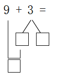
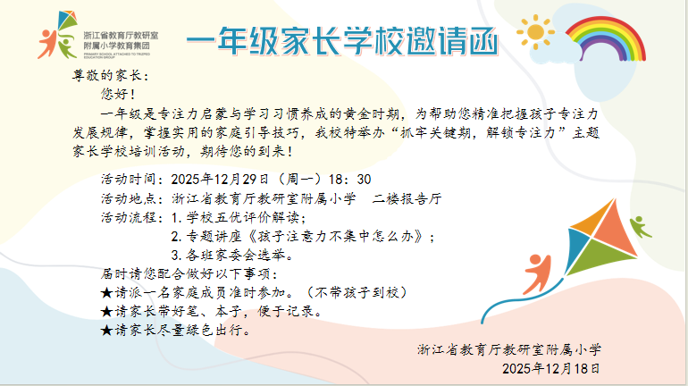
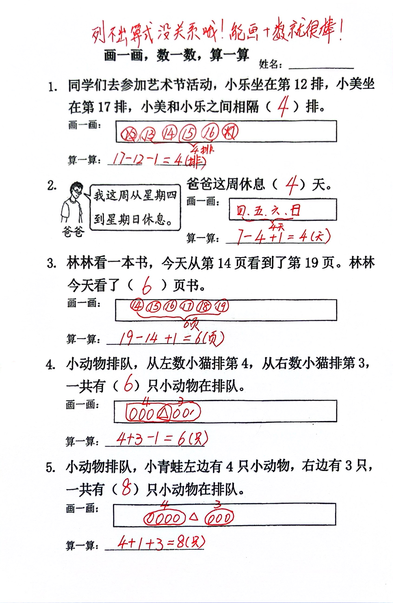
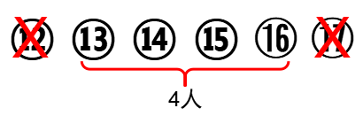
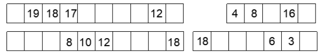
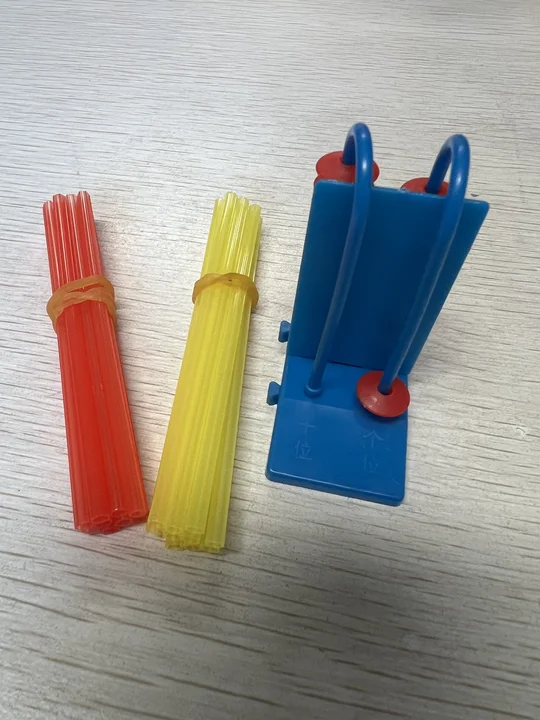

概述
- 本篇记录每天做的一些任务, 方向是 健康、人品、学问, 目标是不断优化带娃方案、实现年复一年、日复一日的进步和提升
一 家校任务
2026.2.6
数学楼老师
- 各位家长，寒假即将开始，现对寒假数学学习活动作一简单说明：
- 必做：完成“年味算出来”，绘制成海报，海报大小A4，开学展示。
- 选做：所有的自主作业，开学带来参与“寒假之星”评比。
-
- 1.观看20天“数学小课堂”，记录小主播和自己不一样的解题方法，开学上交“每日一题”。
-
- 2.根据自己的情况进行适当的口算、解决问题练习或思维拓展，练习材料需自行准备。
- 唠叨两句：今天有小朋友说，每日一题做了，但没有看视频，我有点遗憾。每个视频的背后都是小朋友、家长和我的努力，希望大家能利用好这个资源，认真看、虚心学，以他们为榜样，努力成为更棒的自己！
班主任郑老师
家长朋友们，我将把今天上午跟孩子们讲的主要内容告知大家，再说明一下寒假作业。请耐心阅读：
在家几天，今天回校，绝大多数孩子精神面貌不错，立刻进入状态（坐姿挺拔、专注力高）
反馈这几天的生字抄写、组词和注音：
除了1个没写，2个没交，1个书写不够认真，1个没注音，其他每个孩子都非常认真，正确率也高，可见家长检查过，孩子订正过。我叫孩子们带一句话给家长，说郑老师表扬家长了。[憨笑]
还有个别孩子还注明了日期，或第几天，写了哪几个字词，很有条理。
遗憾的是，我一直忙个不停，没时间细致批阅，等开学后再批阅。
反馈这几天在家表现：
毛雨惜每天在家做练习（家长买的学习资料），我请她上台说明原因。
她表示，自己学习落后，但并不接受自己一直垫底，所以，想超越小伙伴，想获得好成绩。
她能如此清醒地认识自我，并愿意改善自我，像这样认知到位，有目标，有行动，一定会越来越优秀。[加油]
吴书语这几天，每天在家自觉读书，孩子说，不想郑老师操心，孩子真的是因为喜欢人，才更愿意去做相关的事情。
白润泽每天在家也在做练习，平时表现挺好的，为什么还要如此努力？因为他想突破自我，更加优秀。
以上3个孩子的消息，是家长主动告诉我，我再当着全班孩子的面，表扬他们，当做同学的榜样。
再问孩子们，原来还有10多个孩子，也说在家做练习，想获得更加优秀的成绩。
于是，我顺势跟大家回顾了《龟兔赛跑》的故事，强调：
看先天条件，乌龟慢，兔子快，这是我们无法改变的，就好比我们班里，有的孩子一学就会，就好比兔子快，有的孩子学几遍还是会忘，学得慢，像乌龟。
但是，眼看放假了，如果你把放假当成尽情玩的时候，不再学习，那就像兔子一样中途在睡觉；
而你若抓住放假的机会，根据自己的情况，不停地练习，就像乌龟一样，一直不放弃，一直在跑，就是一直在进步，总能获得胜利。
所以，可以说，寒假，就是弯道超车的好时机，就是自我修炼的好机会。
孩子们的劲头已经鼓起来了，假期里，请家长继续给孩子鼓鼓劲，想方设法激发孩子的内驱力，让其感到学习是快乐的，他会更愿意去学习。
137自然记忆法：
1，指每一天
3，指三遍
7，指7天
假如目标选择5首诗，或者《道德经》第一章
每1天，连读3遍，读到第七天，自然就能背出来。
具体经过大致如此：
第一天，读得磕磕碰碰，没有关系，能跟读，或自读完3遍，即可，不要加量；
第二天，再读3遍时，感觉会有点顺口了；
第三天，可能感觉流利起来了；
第四天，会感到熟练了；
第五天，感觉好像能背了，此时，还是读3遍就可以结束，不要强迫孩子；
第六天，好像真的能背了；
第七天，神奇的事情发生了，就算不想背出来，大脑也能自动背出来了。
普遍情况就是如此，个别记性实在太差的，或者每一天读得不够大声，不够认真的，那就在第六第七天，稍加努力，也能背出来。
小学生必背古诗75首
2026.1.30
数学楼老师
-
各位家长，这是关于时间和规律的两个拓展视频，周末可以让小朋友看一看，跟着学一学。
-
各位家长好！一学期下来，孩子们在数学学习中稳步成长，也慢慢养成了认真审题、主动思考的好习惯，每一点进步都值得肯定！关于即将到来的寒假，有以下几点想和大家交流：
- 寒假里，愿孩子们劳逸结合，不妨在生活中陪孩子多认认字、看看和数学有关的读物、做做简单的练习（口算、寒假练习或思维挑战皆可）、玩玩数学游戏，让数学融入日常，保持学习的小节奏~
- 今天我已经和孩子们交流了期末阶段练的主要情况，也根据每个孩子的情况提出了寒假数学学习的小建议，请您回家后和孩子一起规划一下寒假的数学活动。
- 今年寒假我们将开展“每日一题”的思维挑战活动，届时会邀请20位数学小主播，录制小视频和小朋友们进行分享交流，今天以下小朋友已经进行了第一轮自主报名，也希望能得到家长们的支持和配合，由于名额有限，本次没有轮到的安排下一轮参与。其余同学每天先独立做，再听视频讲解，挑战“寒假学习之星”！（自主参加）
- 第一轮自主报名的小朋友是：车方辰，陈选，丁艺峰，方艺畅，冯振远，石子杭，项宇轩，崔怡静，顾芯菲，牛千瑜，彭一槿，孙思媛，汪禹汐，吴书语，尧苏研，张灵筠（以上同学录制视频有困难的话可今晚私信联系我，明后天我将排出第一轮小主播的名单）
-
- 为这些勇于挑战的小朋友点赞👍！
班主任郑老师
家长朋友们，下周一是3-6年级学生期末考试，我们一二年级不用来校，等下周五2月6日再回校，参加休业式，拿寒假作业。
时间为8:30---10:20。
- 明天起，在家请督促孩子每天完成一课生字组词。
-
- 1、每天1课生字组成的词语，每个字组3个词，写一个空一格，正好一行，尽量用之前没用过的字来组词，（个别字只能组一个会写的词，比如“禾：禾田”，下一个字就换行组词）
-
- 2、孩子在写的时候，请务必看着孩子书写，检查其笔顺。课堂上我做不到检查每一个孩子的笔顺，除了偶尔亲眼看着孩子写，大多是从试题中“第几笔是什么”才发现孩子有没有按要求写的。
-
- 3、书写的其它要求，问题，对策，详见图片。
2026.1.29
数学楼老师
- 1.观看视频，对“找规律解决问题”进行复习。
-
2.画一幅有规律的画。
班主任郑老师
家长朋友们，今早大多数孩子选好几本书，放学带回家去看，开学还。
有的孩子没拍照片，是没借，说家里有很多书可以看。
链接的视频，是结合脑科学说为什么要读书。
看了之后，也许就能明白，为什么有的孩子记忆力、理解力、学习力等各种能力跟不上，不仅是读书不够的问题，更是缺乏其他方面必要的练习，影响大脑发育的缘故。
在班里，我已跟孩子们说过，为什么书读得多会更聪明，而看电视、手机、平板，为什么会越看越傻？
简单说，读文字的时候，我们的大脑在解析，在想象画面，相当于解码，把文字变成了画面（包括听书），图像思维强起来，自然越读越聪明。
而看电视手机平板等，看的是别人制作好的画面，如果没有人指导怎么思考，我们一般是被动接受别人直接塞给我们大脑的画面，大脑不动，不动，自然就越来越笨。
寒假是弯道超车，弥补不足的好时机，希望大家顺势也跟孩子强调读书的好处，上学期间，督促孩子每天保证半小时读书，放假期间，敦促孩子每天保证1小时（可分2次读）[加油][加油][加油]
要想孩子跟上去，只有一年级的时候下功夫是最轻松的。到了四五年级，再想努力，逆袭，哪怕只要求孩子跟得上，也十分渺茫了。
2026.1.28
数学楼老师
各位家长，关于最近的数学学习，和大家进行一个简单的交流：
- 上周我们拓展了“认识钟表”相关内容，制作了小钟面，认识了整时，知道什么时间应该做什么事。主要出于以下考虑：新教材将“时间主题”的内容放到了三年级用一周的时间进行整体学习，但根据以往经验，这个内容对孩子来讲是非常困难的，一下子学可能接受不了，因此选择部分内容让孩子作为拓展。
- 今天开始拓展“找规律”相关内容，知道规律就是“以_____为一组，重复排列”，能找规律，并根据规律解决问题。主要是为后期学习“有余数的除法”解决问题做好准备。
-
由于以上内容都是教材上没有的，也没有相关作业，因此，回家后大家可以让孩子看看视频进行回顾，自己做点相关练习。
班主任郑老师
- 今天起, 每天的作业都是读书、听故事.
2026.1.27
数学楼老师
- 明天我们将进行阶段性练习，由于明天上午过关前没有数学课，我也没机会和孩子们再提醒了，因此今天回家请各位家长们多费点心，多给孩子打打气、稳稳心，做好充分的准备：
-
- 1.准备好4--5支削尖的铅笔，尺子和橡皮，保证书写好！
-
- 2.对今天下午完成的《综合练习五》进行订正和举一反三。
-
-
- [魔法棒]特别说两句：这是一份简单的基础练，但全对率并不高（仅5人全对），今天回家一定一定要对这份练习进行彻底过关，保证基础题不出错！
-
-
- 3.有时间的话可以把所有的单元练、期末练和专项练拿出来，读一读回顾一下，保证知识不遗忘！
班主任郑老师
- 今日语回：
-
- 1、读读写写第108页生字组成的词语（重点写曾错过的）
-
- 2、背背默默拼音表
-
- 3、读书听故事
-
自认为孩子经常写错，改正又忘记的，一定要动笔写写。
-
整理班里借回家的书，明天归还
- 准备好学具（跟数学相同）
2026.1.26
数学楼老师
1.完成《数的认识专项练习》
2.订正前期的所有练习，并对今天下发的《综合练习一》进行反思，特别提醒：给算式排队，不能给得数排队；一图四式的总数不能变；看算式画圆，再练练减法。
班主任郑老师
今日语回（大家根据自家孩子的情况，决定是否需要动笔写一写）：
- 1、默写拼音3表，即第57页拼音表
- 2、根据3张拼音复习卷的情况，再听写，或者给他打印拼音卷，圈画几个曾经错过的，再要求动笔写。
-
3、读书听故事。
-
目前，还是有个别孩子不是根据意思写词语的，或者，不是根据意思选字组词的。
- 虽然在课堂上多次强调，但目前不能保证每一个孩子都理解，会运用。
- 家长如果发现这类问题，可以经常跟孩子玩玩词语接龙，或者组词游戏。
- 还有个别孩子虽然会读会背课文，但是单独拎出一个句子，又不认识了，说明他是凭借记忆读背的，识字量不够的，读课文的时候，一定要督促他手指点着字读，或者抽一句两句读。
- 自己贴的词语表，重点读或写要求会写的部分。听写的时候，需要打乱顺序听写，这样就能发现孩子到底认不认识这几个字词。
-
本周没有X班，放学前，如果孩子还不能完成当天的作业，可能会被留下来补习，请大家随时注意信息，以免在校门口长久等候而挨冻。
-
这周五是本学期最后一天，明天起，私人物品将陆续带回家，班里的书需要归还。
- 寒假前，我会安排时间，再重新借，可以多借几本，明年开学再还。
2026.1.23
数学楼老师
- 1 完成解决问题专题（二），其中反面的“优秀加加油”可选择性的做。
- 2 对最近做的几份练习，进行错题回顾（图形专项练、运算专项练、模拟三、模拟二）
- 3 对五份单元卷采用通读一到两遍的形式进行回顾复习。
- 4 最后，祝下周每个小朋友都能成功展示自己～
班主任郑老师
- 1.梳理拼音复习卷1.2.3，有错的字词再练一练。
- 2.第108页左半边的生字组成的词语读读写写，即第68页之前自己贴的词语表里要求会写的部分。
- 3.读书，听故事。
- 4.高科技智能书包，没画完的画完。
2026.1.22
数学楼老师
- 1.订正《模拟卷三》和《运算专项练习》，明天一定要带回来！
- 2.复习课作本的错题
班主任郑老师
- 1、听写易错易混淆的字：
- 2、读110页偏旁名称表。
- 3、读书、听故事。
易写错的字：
了--子 左--在 午--牛 去--云 木--本 石--右 半--羊 风--几 刀--力
易混淆，用错字组词的字（少数孩子不会根据意思用字，想到哪个就写哪个）：
五天--中午 大力--立正 又是--也有--右手 禾田--你和我 办公--公正--手工--木工
易混淆，反一反顺序，就分不清的词：
木耳--耳目 头目--木头
2026.1.21
数学楼老师
- 1.订正《立体图形专项练习》，明天务必带回。今天在批改前已经对反面的易错题进行了分析，因此哪怕是看上去全对的卷子都要请孩子说说为什么。
- 2.复习课作本上的错题（分三天完成整本课作本的复习）
2026.1.20
数学楼老师
- 1.完成《书》P108、109。
- 2.读《课作》P80，81。
班主任郑老师
- 第108页写字表，读+拼+说（笔顺）
- 还有一部分孩子的笔顺随心所欲，不按正确的写。
- 请家长帮忙督促检查孩子的笔顺是否正确（1、顺序正确；2、笔画名称也说对；3、必要的时候叫孩子边写边说笔画名称。如“火”：1右点，2短撇，3竖撇，4捺）
2026.1.19
数学楼老师
- 1.课作P74，75，76说理，读P77，78。
- 2.《书》P106、107（填表）。
班主任郑老师
- 1、背诵课后要求背诵的课文以及园地里的日积月累
- 2、读书听故事
-
3、带能擦干净桌面的工具
-
今天听闻有孩子说家长给孩子喝酒，玩手机游戏，于是便向全班孩子普及了未成年人喝酒以及低龄儿童玩手机平板游戏会降低智商、破坏学习能力的常识。
- 希望家长们也要适当地学习，了解养育孩子的基本常识，不要因为不学习，不知道，而阻碍了孩子的能力成长。
2026.1.16
数学楼老师
- 完成巩固练（十二）
- 做一个有创意的钟面
班主任郑老师
- 1、再背拼音三表（声母、韵母、整体认读音节
- 2、拼读108--110页的写字表、笔画名称和偏旁部首名称表
- 3、读书听故事
2026.1.15
数学楼老师
- 订正第五单元单元练，家长陪伴反思，并签名。这次练习继续采用独立读题的形式，看不清的图都在练习时给孩子们看了放大的彩图，特别是第20题，还集体数数进行了标注（有错误的孩子要特别提出批评）。
班主任郑老师
-
最近诺如病毒开始流行。昨天和今天各有一个孩子肚子疼，呕吐。大家在家时注意观察，同时督促孩子勤洗手，做好防护。
-
1、复习第八单元（读+背+拼+说）（一年级在家复习语文就是这几样，没掌握好的，再练练。掌握好的，一遍即可）
- 2、读书听故事
- 3、明天又美术课，勿忘带涂色工具
数学楼老师
- 1.对今天做的的口算P78，79捉捉虫、查查错，尽量用上速算技巧。
- 2.口答《课》P70、71。
班主任郑老师
- 1、复习第七单元（具体内容跟第五第六单元一样）
- 温馨提醒：
-
- A、成绩不理想的孩子，家长一定要注意监督他拼读生字，说笔顺。
-
- B、识字量少的孩子，一定要监督他手指点着字读，直到不读不背课文，随机点几个字词也能认识。
-
- C、我们班有些孩子的学习能力和学习成效差距都比较大，全靠老师教是不上去的，非常需要家长的支持，最起码要督促孩子按要求完成各门功课的作业或锻炼的任务。
- 2、看书、听故事
2026.1.13
数学楼老师
- 1.对今天做的的口算P76，77捉捉虫、查查错，尽量用上速算技巧。
- 2.复习第五单元，明天进行单元练。
班主任郑老师
-
重要：明天下午我们要参加学校现场书法观摩，务必记得穿校服。
-
今日语回：
-
- 1、复习第六单元（即：读背课文+古诗、读贴的词语、读生字及拼音、说生字的笔顺）
-
- 2、读课外书，听故事
2026.1.12
数学楼老师
- 1.对今天做的的口算P74，75捉捉虫、查查错，尽量用上速算技巧。
- 2.读《课作本》P67、68。
班主任郑老师
- 1、背第五单元课后要求背诵的课文和日积月累
- 2、读自己贴的词语，以及园地五，《拔萝卜》
- 3、读书、听故事
2026.1.9
数学楼老师
- 1.完成巩固练（十一）
- 2.继续练习口算
- 3.认真复习第五单元，准备单元练。
- 4.继续练习系鞋带，准备参加下周“劳动小能手挑战赛”。
班主任郑老师
- 1.读106--108页生字+拼音
- 2.复习卷
- 3.看书听故事
2026.1.8
数学楼老师
- 今天回家主要是自主练习进位加法的口算，明天将进行二次过关。
班主任郑老师
- 1、背诵语文书第16、29、58、69、82、91、102页的古诗或日积月累
- 2、读第105页的生字，字+拼音
- 3、向报喜三跳比赛的结果
- 4、看书，听故事
2026.1.7
数学楼老师
- 1.今天我们学习了“多角度解决问题”，回家后请对课作P64的作业进行复盘，说清每道题为什么用加法。例如第1题：要求原来有几辆车，就要把开走的车和剩下的车合在一起，用加法。
- 2.对今天做的的口算P72，73捉捉虫、查查错，尽量用上速算技巧。
- 3.读《课作本》P65、66。
班主任郑老师
- 1.读语文书第2--18页
- 2.第三单元的复习卷给家长过目
- 3.读书，听故事
- 4.明天有美术课，记得带涂色工具
2026.1.6
数学楼老师
- 各位家长，今天回家请关注：
- 对今天做的的课作P69和口算P70，71捉捉虫、查查错，尽量用上速算技巧。
班主任郑老师
- 1、读第45--59页，即第四单元
- 2、复习卷给家长看
- 3、书写好的孩子准备全国书法大赛作品（详见前天小助教家校通知）
- 4、“百人书法现场大赛”报名（对书法有兴趣的家长，详见今天的小助教家校通知）
- 5、读书、听故事
2026.1.5
数学楼老师
- 1.今天我们学习了“多角度解决问题”，回家后请对课作P63的作业进行复盘，说清每个算式是怎么观察得到的。
- 2.对今天做的的口算P68，69捉捉虫、查查错，尽量用上速算技巧。
- 3.读《课作本》P64、65。
班主任郑老师
- 1、读语文书P32--44页（内容跟昨天同类，包括贴的词语）
- 2、跟父母一起统计（估算）上小学后大约读了几本书，听了几个故事（写在家校本上最下面）
- 3、玩玩舒尔特方格（韵母+古诗《画》。因为用的是手机或平板，所以最多玩5分钟），记住最快速度是多少，明天跟同学比一比
- 4、读书、听故事
2026.1.4
数学楼老师
- 1.对今天做的的口算P66，67捉捉虫、查查错，尽量用上速算技巧。
- 2.往后读两页课作本
班主任郑老师
- 1、朗读语文书P20---31页，即第二单元所有拼音、拼音词、儿歌、古诗、故事。
- 2、今天在校默写P57页的拼音三表，全班三分之一孩子全对，三分之一错误太多，需要回家再默写，默完后自己对照语文书检查订正，错3个以上再重默。如果还是不能通过，明晚或后天再重默。
- 3、读书、听故事。目标：通过每天进行，变成习惯，一日不读或不听，就像没吃饭一样。
2025.12.31
数学楼老师
- 1.练练口算，准备进位加法的过关。
- 2.完成巩固练（十）
- 3.复盘今天的购物体验，理解什么是付出的钱，什么是找回的钱。
- 4.练习系鞋带。
班主任郑老师
- 元旦3天，语回很少，多点时间带孩子接近大自然，多运动，多活动吧
- 1、再复习拼音三表，默一默。
- 2、拼音弱的孩子，再读拼音大闯关练练。
-
3、每天跳绳、打小球，或者其它运动也可以，还有读书、听故事
-
周日上学，上周五的课，X班就是周五的X班。
- 语文从拼音开始复习。
最后几句话： 今天，孩子们超级开心，肯定有话跟家长聊，希望家长能专心跟孩子聊几句，适当地问几句，促进孩子的表达，引起孩子的思考，比如花了多少？有哪些价值？（包括情绪价值）明年我们也可以当卖家了，可以卖什么？怎样做能挣到钱？财商的培养，就在亲子的聊天中。
2025.12.30
数学楼老师
- 今天的数学任务是统计课作本的积分，每一行算出总数，写在最右边一格。如果封面上的积分表遗失的，可以直接算每一页的成绩（A3🌟计3分，A-3🌟计2分，A2🌟计2分，其余计1分）
班主任郑老师
明天一整天是新年活动，今晚要做一些准备，请大家给孩子必要的支持。
- 1、明天上午三跳比赛，需要准备好跳绳。
- 2、下午是非纸笔测试，需要自带涂色工具
- 3、最后是贸易节，我们只要购物，二年级开始可以摆摊，而孩子的数学才学了20以内的加减法，所以，自带人民币20元，不要多带。还有优币，也可以购物。钱币都要交代孩子放到稳妥，不会丢的地方，比如有拉链的口袋，或者衣服上有扣子的深的口袋。购物时，钱币不要拿手里，需要的时候才拿出来。如果丢失了，找回的可能性极低。所以，趁此机会，可以教育孩子如何保管钱财，包括如何消费，买点有用的东西。同时，还要观察，哪些商品的销量好，有钱赚，明年二年级开始，我们也可以参与摆摊赚钱了。会观察，会思考的孩子，应该能赚到更多钱。
- 4、今晚语回，复习第57页的拼音三表，和查阅第八单元的卷子。
第八单元的检查经过与结果如下：
先独立做半个小时，我发现有三分之一左右的孩子识字量太少，就不知道怎么做，也来不及做，所以，剩下的10分钟，我才读题，读最后一篇阅读文章。
结果是27个优秀，其中5个全对，还有4个从尚需努力或合格，进步到了优秀。
除了识字量不够，依然阻碍了孩子读题和审题，还有个别孩子，讲过练过多次的字依然会错，比如“半”。这是专注力、观察力、学习力的问题。
还有的孩子逻辑思维比较欠缺，比如选择或排序之后，不会回读一遍，看看句子通不通。其中也包括了识字量不够，书读得太少，听得太少，缺乏语感。
每个孩子都想获得优秀的，每个家长也同样希望孩子优秀，想要孩子跟上，想要孩子缩小差距，唯一的办法就是先补0-6岁缺失的家庭教育，尤其是放手让孩子自己的事情自己做，并且指导他运用好方法，高效完成。同时加强训练，比如运动，比如读书，比如亲子互动游戏，包括昨晚家长上蒋老师提供的类似的专注力训练的益智游戏。习惯改善了，心性养好了，能力加强了，一定会获得优秀。
2025.12.29
数学楼老师
- 1.对今天做的的口算P64，65捉捉虫、查查错，尽量用上速算技巧。
- 2.口答课作本P62。
班主任郑老师
- 1、读读背背第八单元的课文以及《风》
- 2、读词语，其中带有“办、半、羊、有、长”的词语再听写听写。（个别孩子“半”和“羊”的书写还是分不清，“办”和“半”的组词还是搞不清）
2025.12.26
数学楼老师
- 好好练习口算，准备20以内进位加法的口算过关。
- 完成《巩固小练习（九）》。（巩固练习纸质稿已发，电子稿家长们可留存，切勿对外流传！）
- 劳动：练习系鞋带；未将水培植物带来学校的拍照上传班级圈。
班主任郑老师
- 1、讲个故事给家长听（第103页）
- 2、拼音卷准备
- 3、周一晚上家长会
- 4、读书、听故事
2025.12.25
数学楼老师
- 今天的数学课研究了8+□的口算技巧，即“和的个位比另一个加数少2”，回家请关注：
-
- 1.对今天做的的口算P62，63捉捉虫、查查错，看看能不能用上速算技巧。
-
- 2.应用速算技巧口答以下各题，要求快速（脱口而出、不停顿），准确。
8+3=11 8+5= 13 8+9= 17 4+8= 12 8+7= 15 5+8= 13 8+4= 12 6+8= 14 3+8=11 8+6= 14 9+8=17 7+8= 15 100分开心
-
- 3.明天把数学作业带来学校。
班主任郑老师
- 1、读第八单元的生字词语，选一些听写一下，包括笔顺。
-
- 尤其是以下几个字，都示范过、强调过，但总有个别孩子会写错：
长（竖提方向要朝右边）、
公（上面的“八”起笔要分开）、
多（上下两个“夕”要对准）、
出（中间是一竖，不能分两笔写）、
半和来或者半和羊（有的孩子会混淆）、
你（其中横勾的勾要短，有个别的会写成横折或横撇）、
爪（主要是笔画位置摆不准）
- 2、读或背《春节童谣》给家长听。
- 3、美术工具、作业，勿忘。记号笔的墨水没了要及时更换。
2025.12.24
数学楼老师
- 今天的数学课研究了9+□的口算技巧，即“和的个位比另一个加数少1”，且“和的个位和十位数字相加等于另一个加数”，回家请关注：
- 1.口答《课作本》P58、59。
- 2.应用速算技巧口答以下各题，要求快速（脱口而出、不停顿），准确。
9+3= 9+5= 9+9= 4+9= 1+9= 9+2= 9+7=
5+9= 9+1= 9+4= 6+9= 3+9= 9+6= 8+9=
9+8= 2+9= 7+9=
- 3.明天把两捆小棒带来学校，上课要用。
班主任郑老师
- 1、背诵古诗《风》
- 2、预习第103页《我会想办法》，尽量多想几个办法
- 3、预习第104页《春节童谣》，不认识的字，借助拼音多读几遍。
2025.12.23
数学楼老师
各位家长，今天我们学习了“凑十法”，这是一节进位加法的起始课，因此回家我们有一份凑十练习，要求小朋友边说边写（纸质稿已发，电子稿有需要可留存）。例如：

说：9+3等于几，把3分成1和2,9+1=10,10+2=12，9+3=12。
- 其它：口答课作本P56、57（读出答案，不用写）
班主任郑老师
- 1、复习第10课《雨点儿》即：读课文2遍+拼读生字+说笔顺+读词语+听写
- 2、预习园地八，其中“日积月累”的《风》至少读3遍（不认识的字借助拼音）
2025.12.22
数学楼老师
- 1️⃣对今天做的的口算P60，61捉捉虫、查查错。
- 2️⃣练练口算。
班主任郑老师
- 1、复习第九课（读课文至少1遍，拼读生字，读词语及听写，注意笔顺）
- 2、预习第十课（读课外至少3遍，拼读生字，说笔顺）
- 3、挑战二选一：
-
- A、把《乌鸦喝水》的故事讲给家长听
-
- B、模仿课文《乌鸦喝水》，讲《乌鸦吃肉》的故事（详见视频）
2025.12.19
数学楼老师
- 好好练习口算，下周将正式开始学习进位加法
- 完成《巩固小练习（八）》
- 订正第四单元单元练，家长陪伴反思，并签名。这次练习才用了独立读题的形式，祝贺以下获奖的小朋友 png
班主任郑老师
- 1、复习第8课--读粘贴的词语，包括听写
- 2、预习第9课《乌鸦喝水》2遍，拼读生字，说笔顺。
- 3、请假的孩子，落下的课作本作业，回家补上能写的题目，自己学不会的题目留着，下周单独补。
- 4、下周一足球报名（详见浦老师发的群消息。这两天想好报不报，下周一教练会来带学生选拔）
- 5、准备音乐表演用的音频（详见夏老师发的群消息）
-
6、下下周一，即29号晚上有家长学校，请安排好时间，准时参加。
-
- 
音乐夏老师
- 各位家长，下周音乐课上每个小朋友要进行表演唱过关，复习音频在群文件夹《一上复习歌曲》，自选2首最喜欢的歌曲准备，要求如下：
-
- 1.跟伴奏，背唱歌曲
-
- 2.有表情，声音响亮
-
- 3.加上动作，可以和课上学的一样也可以有自己的创意
体育蒲老师
- 各位一年级的家长朋友们，大家好！
- 为发掘校园足球后备人才，丰富低年级学生课余生活，培养运动兴趣与拼搏精神，现正式启动一年级男子校足球队队员选拔！
- ✅ 选拔对象：本校热爱足球运动，勇于拼搏的一年级男生（有无基础均可）
- ⏰ 选拔时间：12月22日 周一 下午2:10-3:40
- 📍 选拔地点：南校区足球场
- 📝 选拔内容：
-
- 基础协调性测试、球感体验、运动潜力评估
- 🌟 入选福利：优秀学员未来可晋升校足球队精英队，代表学校参与各类赛事！
- 📌 注意事项：
-
- 1.选拔当天请让孩子穿舒适运动服、运动鞋，如有足球鞋请穿好足球鞋；
-
-
- 选拔当天会有老师来班级内带队，统一带去南校区，告知孩子只需要在班级内等候。
-
- 让孩子在绿茵场上感受运动魅力，收获健康与成长，期待孩子们的积极参与！
- 如有疑问可随时私信联系浦老师（13989842835）。
2025.12.18
数学楼老师
- 今天我们进行了第四单元综合练，明天进行分析讲评，这是电子稿，有需要可自取。另，下周我们将正式开始学习第五单元，建议平时多进行凑十练习。
班主任郑老师
-
家长朋友们，今天的语回是孩子把第七单元的练习卷交给家长看，
-
再说一说“小、月、风、水”的笔顺。
-
明天电视台来拍摄活动，所以务必穿校服。包不住的穿可以里面。
-
这次练习卷尝试了一次我先不读题，让孩子直接做。
- 有10几个孩子很多字不认识，不知道怎么写。半个小时后，我再来读题，帮助孩子对照检查不会的题。但因为考虑一半以上的孩子认识字，会做，所以我是连续读完所有题目，即：读完一题，但没时间等他们完成一题。那不认识字的孩子当时来不及写，回过头又不记得了。因此，识字量始终是个亟需突破的要事。
-
（识字量少的孩子，一定要坚持每天读字数很少的绘本，喜欢的绘本可反复读，或者生活中见到什么字就告诉孩子这是什么字。这种自然识字法是无痛的，没压力的，到一定时间，你会发现孩子一下子认识了很多字。这个事情在幼儿园时期应该完成，没跟上的，得加紧补这一课了。）
-
除了识字量，第二个问题是少数孩子不会拼读，或者拼读太慢。要解决这个问题，除了每天拼读一课学过的生字，预习时的生字，还可以叫孩子把每天家校本上的内容拼读给你听。
-
第三，是平时我示范每一个生字的时候，会讲笔画的位置、长短高低角度等等，然后我写一两笔，再让孩子学着写一两笔，大多数孩子的书写越来越漂亮，但个别孩子总是不按要求书写，只顾自的超前写好，再加上能力不足，所以，练习的时候，就暴露出书写不到位，或者笔画不对，或者笔顺不对。换句话说，学习这个方面，低幼的孩子必须听话，照做。假如不会看，不会听，专注力不行，再加不愿意照做，学习就难免跟不上。
-
每一个孩子都想获得优秀的成绩，那我们就要多多培养孩子获得优秀成绩的能力，最根本的是专注力（会看、会听、会专心做），还有学习力（兴趣、好奇心，爱思考，理解能力），以及一颗追求卓越的心和行为。
-
这次参加练习的人数是39个，结果是22个优秀，其中3个全对。
2025.12.17
数学楼老师
-
孩子们的画图解决问题比较薄弱，我专门出了一份小练习，今天再练练。不会列式没关系，但要会画图和数出答案。答案参考如下：
-

班主任郑老师
-
再读《比尾巴》2遍，拼读生字，说笔顺。
-
少数几个孩子看拼音写词语有困难，其中一个原因是不会拼，那么每次预习拼读生字的时候要重视，如果实在困难，可以拼读已学过的生字，这样就简单多了，坚持每天拼读一课的生字，也一定会进步。
2025.12.16
数学楼老师
- 1.课作本：P54页前全部做完、订正完。
- 2.口算训练清到P57：29、34
- 其他：对今天做的的口算P58、59捉捉虫、查查错。
- 读课作本P55，订正P51、52、53。
班主任郑老师
- 1、预习第8课《比尾巴》（读5遍，拼读生字，说笔顺）
- 2、读书、听故事
2025.12.15
数学楼老师
- 1️⃣对今天做的的口算P56，57捉捉虫、查查错。
- 2️⃣练练口算，准备一下明天进行20以内口算（一）的过关。
班主任郑老师
- 再复习第七单元，
- 特别是
- 1、“左和在、我”的笔画，以及“见”的竖弯钩，“心”的左点，还有“又和右”的应用（组词），这几个字总有几个孩子分不清，写不到位；
- 2、前后左右、东南西北这个几个方位；
- 3、识字量（要坚持每天读字数较少的绘本，学校里，教室里可借回家看，少儿图书馆也有免费的一次性可借10本还是20本回家看）
2025.12.12
数学楼老师
- 今天回家请陪伴或提醒孩子做好以下几件事：
-
- 好好练习口算，下周将开始进行20以内的口算过关。
-
- 完成《巩固小练习（七）》。（巩固练习纸质稿已发，电子稿家长们可留存，切勿对外流传！）
班主任郑老师
- 复习第七单元，
-
- 即：这个单元每篇课文背一背（包括园地七的日积月累），拼读每个生字，说说每个生字的笔顺（包括园地七的“爸”“妈”），以及新学的部首名称。
-
- 拼音卷，我先发一份，想要全对满分的孩子可以事先练一练。下周正式做，内容不变，顺序会有变化。
2025.12.11
数学楼老师
- 今天我们学习了《之间有几个》的数学问题，这是一节解决问题的策略探究课，对孩子们来说比较难理解，格式也非常特别，以画图解决为主，列式计算为辅。具体解题步骤和格式如下，回家后，可以进一步强化巩固。
-
例：小明排第12，宁宁排第17，小明和宁宁之间有几人？
-
①从头画到尾；
- ②“之间”就是去头又去尾；
- ③最后再来数一数，之间有4人。

- 其他：
-
- ①对今天做的的口算P54，55捉捉虫、查查错。
-
- ②读课作本P54、55，务必读熟练。
班主任郑老师
- 今天语回：
-
- 1、背第七课《两件宝》，读词语，听写
-
- 2、预习园地七，重点是读一读每道题，看看要我们干什么。
-
- 3、再准备，熟悉一下书法家小故事，明天班里讲
-
- 4、看书、听故事
-
另外，再提一句：一般情况下，孩子发热，首选物理降温。
- 若是普通感冒，不用吃药，一般3天左右，就会自愈，之后还会增强免疫力（坚决不要打点滴）；
- 如果高烧不退，要小心是否是流感，务必要尽早排查。首选自测，其次考虑去医院查。
2025.12.10
数学楼老师
-
今天完成了第三单元综合练，本次练习采用了独立练习的方式，老师不再读题。整体来看，大部分小朋友的读题能力还是很不错的，整张卷子分成两个板块，第一板块“填一填”为基础知识，第二板块“选一选+用一用”为综合应用。练习卷已经全部讲评并发回家，回家后请家长们务必花点时间和孩子分析一下进步点和不足点，订正完明天带来学校！！一定一定要带来！
-
其他：①对今天做的的口算P52，53捉捉虫、查查错。
- ②自查数学书P86、87，记得给P87的小猫涂色。
班主任郑老师
今天语文回家作业：
- 1、读第6课词语，听写（其中“我”易错、“左”和“在”易混淆，大家还要注意孩子书写时的笔顺，以及坐姿、握笔姿势）
- 2、预习第7课《两件宝》，读5遍，拼读生字，书空笔顺
- 3、看书、听故事
2025.12.9
数学楼老师
今日数学学习内容：复习20以内数的认识和加减法相关知识。回家请关注：
- 对今天做的的口算P50，51捉捉虫、查查错。
- 对课作本P54进行回顾说理
- 复习第三单元
- 明天劳动课带魔术擦
班主任郑老师
- 1、背第5课《小小的船》（听写词语）
- 2、预习第6课《影子》（读课文5遍，拼读生字，说生字的笔顺）
- 3、准备一个关于书法家的小故事（本周内班里上台讲）
-
- 故事可用书上的，也可以用网上的，一两分钟的书法家小故事即可，参考：
2025.12.8
数学楼老师
今天的数学学习内容为：10加几、十几加几和相应的减法 请假的同学身体恢复后可观看微课，并完成数学书P81，课作P49,50。
今日回家
- ①练口算；
- ②继续练习数数，特别是3个3个和4个4个数；
- ③复习第三单元（周三单元练）
微课资源（注册登录即可观看）： https://basic.smartedu.cn/syncClassroom/classActivity?activityId=f79b6ffa-a492-c96a-5cfa-e75d5021989e&chapterId=4868b198-14ac-4f85-8e55-ccaaef49f888&teachingmaterialId=ba9d9c0b-2c1c-4bba-84d7-369fb405bb13&fromPrepare=0&classHourId=lesson_1
班主任郑老师
- 1、背诵第五课《小小的船》，读词语（今天不听写）
- 2、第六单元练习卷（还有部分孩子没订正完，回家订。其中写了日期的就表示订完了）
- 3、识字小报忘带的，明天带来
- 4、读书听故事
2025.12.5
数学楼老师
- 好好练习口算
- 完成《巩固小练习（六）》。（巩固练习纸质稿已发，电子稿家长们可留存，切勿对外流传！）
班主任郑老师
- 1、复习第六单元，下周一做练习卷
- 2、预习5《小小的船》（课文读5遍，拼读生字，说生字的笔顺）
- 3、做识字小报（即：收集家里可剪贴的带汉字的纸张（包装纸、药盒等），贴到A4或8K的纸上，并会认读这些字）
- 4、摆擂台，指的就是上午讲过的收集孩子的绝活，创下记录
- 5、选做：搜资源自学三阶魔方
家长朋友们，这周开始，我们要收集孩子们的绝活，即：你有什么拿手绝活，是班里同学最厉害的，就可以告诉我，有的内容需要展示（现场、图、视频均可），有的内容需要家长告诉我，也可以打擂，超越擂主同学的记录，有兴趣的，或者已经有自认为在班里是无敌的，随时告诉我[抱拳]
内容可以是各种类别，各种记录。
如跳绳：
汪禹汐可以双飞连跳12个，目前无人能敌。
还可以挑战：不计时，但不间断，连跳能跳几个？
有的会花跳，那1分钟能跳几个花跳？或者能连跳几个花跳？
如打小球：
项宇轩右手能连打，不间断，连打3111个
还可以挑战左手能连打几个？
左右手交替打，能连打几个？
慢跑学校操场，不停歇，能跑几圈？
徒步能走几公里？
……
除了运动类的，还可以是其它任何对成长有益的项目
如：
平均每周能读几本书？
总计能背几首古诗？
100道口算，全对的前提下，最快几分钟完成？
转魔方，复原1面或6面，最快多久？
会做多少劳动？会做几道菜？
上小学以后，交了多少个新朋友（上学以前的不算，还要叫得出姓名）
……
无论是哪一个项目，要能够量化，可以比一比，接受同学挑战的。
2025.12.4
数学楼老师
各位爸爸妈妈，今日请关注：
[钉子]继续练习数数。
[钉子]读课作本P46,47,48
[钉子]自练口算，准备明天过关（10分钟）
班主任郑老师
今天语文回家作业可能需要家长多督促多帮助一下（大家根据孩子的情况）：
1、背诵2首古诗（《古朗月行》+《静夜思》）
2、拼读课后生字（5-8课）（课后两条蓝线之间的字）
3、读园地的词语（即贴在第80页的词语，要求会写的听写一遍）
4、看书听故事
明天练习“看拼音写词语）
2025.12.3
数学楼老师
各位家长，这几天我们学习了20以内的数的认识，对于零起点来说的小朋友除了数的组成，感到最困难的就是数数，例如这样的填空在口算能力还没跟上时只能依赖数数。
今天课堂上发现有小朋友一个一个数的顺数和倒数还不会数，为了给孩子们一个缓冲的时间，今天、明天的口算作业都暂停，先把数数这个难关攻克掉。也请所有家长们配合，帮助孩子们从借助小棒数过渡到拍手直接数。数数要求：

①1个1个数
顺数：0、1、2、3……17、18、19、20。
倒数：20、19、18、17……3、2、1、0。
②2个2个数
顺数：0、2、4、6、8、10、12、14、16、18、20。
倒数：20、18、16、14、12、10、8、6、4、2、0。
③3个3个数
顺数：0、3、6、9、12、15、18。
倒数：18、15、12、9、6、3、0。
④4个4个数
顺数：0、4、8、12、16、20。
倒数：20、16、12、8、4、0。
⑤5个5个数
顺数：0、5、10、15、20。
倒数：20、15、10、5、0。
班主任郑老师
今天的语文作业：
1、背诵第8课，读词语（在家自己听写的时候要注意笔顺）
2、预习园地6
2025.12.2
数学楼老师
今天回家请关注以下三个任务:
[钉子]完成《猜数游戏》，并编3道猜数谜。
[钉子]用小棒或计数器帮助进行数数，努力达到正确、迅速。
①2个2个数
顺数：2、4、6、8、10、12、14、16、18、20。
倒数：20、18、16、14、12、10、8、6、4、2.
②3个3个数
顺数：3、6、9、12、15、18。
倒数：18、15、12、9、6、3。
③4个4个数
顺数：4、8、12、16、20。
倒数：20、16、12、8、4。
④5个5个数
顺数：5、10、15、20。
倒数：20、15、10、5。
[钉子]明天下午第一节上劳动课，请带合适的水果（洗净带来），一律不带水果刀，学校也不提供刀具。
桌布、餐盘学校会提供，无需准备，围裙、手套需自备！
班主任郑老师
今天语文回家作业：
1、读第7课和词语（要求会写的最好听写一下）
2、预习第8课（读课文5遍+书空生字的笔顺）
3、读书听故事
4、整理书包，留下必要的学具，拿出没有必要带的物品，班里借的书看完了记得还回去。
2025.12.1
数学楼老师
[钉子]对今天做的的口算P48，49捉捉虫、查查错。
[钉子]读课作本P45
[钉子]看小视频，弄懂怎样填“最大能填几”
准备周三的水果拼盘劳动课，建议准备：蓝莓、树莓、车厘子、橘子等方便摆盘的水果，不能带西瓜、哈密瓜、榴莲等水太多、不能造型的水果。另，家里如果有多余的一次性手套、围裙、桌布、纸盘的，请多带一点和小朋友分享～
班主任郑老师
今天语文回家作业：
1、背诵第6课，读词语（建议在家听写一遍要求会写的字）
2、预习第7课（生字的笔顺，要看红色笔画书空）
3、看书听故事
4、记得带书法课用的小本子和大本子
2025.11.28
数学楼老师
今天回家请陪伴或提醒孩子做好以下几件事：
[钉子]好好练习口算，下周将进行开始进行连加连减的口算过关。
[钉子]完成《巩固小练习（五）》。（巩固练习纸质稿已发，电子稿家长们可留存，切勿对外流传！）
下周要学习20以内数的认识，周末学习两件事： ①用牛皮筋捆、拆小棒（10根1捆，练熟练）； ②组装计数器。装在塑料袋里周一带来学校。

下周劳动课内容预告（周三）：做水果拼盘，准备合适的水果+一次性围裙+一次性手套+纸盘
班主任郑老师
今日语文作业：
1、第五单元练习卷给爸爸或妈妈看
2、读第五课词语（最好能听写一下）
3、预习第六课（说生字的笔顺）
2025.11.27
数学楼老师
[钉子]对今天做的的口算P46，47捉捉虫、查查错。
[钉子]用超轻黏土做个大正方体，试着切一切，切几刀才能切成8个小正方体。
2025.11.26
数学楼老师
各位爸爸妈妈，今日请关注：
[钉子]对今天做的的口算P44，45捉捉虫、查查错。
[钉子]读课作本P43
[钉子]用学具袋里的立体图形搭一搭，尽可能用上所有的，搭得又高又稳，边搭边说理由
班主任郑老师
家长朋友们，明晚有家长会，请记得安排好工作与生活，准时参加。主题内容非常重要，没有特殊情况，请勿请假。
6:30先到报告厅集中，由我主讲，后面再回到本班教室，由语数老师主讲。[握手][握手][握手]
今晚语文回家作业为：
1、预习第五课《对韵歌》，课文很短，至少读5遍。
2、能干的小朋友，可以看生字，自己按笔顺书空一下（即用手指对空写，家长看看孩子的笔顺有没有按书上的写）
2025.11.25
数学楼老师
各位爸爸妈妈，今日请关注：
[钉子]对今天做的的口算P42，43捉捉虫、查查错。
[钉子]读课作本P41,42
[钉子]单元卷未带或为订正完的（5、9、13、19、22、26、43），请家长继续关注，明天一定一定把订正好的卷子带回给我二次复批！
[钉子]玩亲子游戏《你说我猜》,小朋友和爸爸、妈妈一起玩猜立体图形的游戏，游戏线索一定要准确哦，每一次猜都要说理由!
游戏准备：一个袋子+4个立体图形学具。
(1)最好能有3个人一起玩，一人装一个立体图形到袋子里，其他两人都不能看到。
(2)另一人伸手摸一摸，说两条线索，让第三人猜。
例：妈妈装；→小朋友说：这个立体图形会滚；→爸爸猜：可能是圆柱，也可能是球；→小朋友继续说线索：这个立体图形没有平平的面；→爸爸继续猜：球；→妈妈拿出来宣布答案。
班主任郑老师
家长朋友们，明天我们班要上一节公开课，请务必记得让孩子穿校服。
上课的内容就是第九课《乌鸦喝水》，今天在家至少读5遍。
另外，再复习第五单元，背一背4篇课文，复习一下字词。
今天写了整个单元的看拼音写词语，最快的孩子20几分钟就完成，并且全对，最慢的一整天了也没写完，个别孩子虽然写了，但基本是错的。今晚务必再复习复习。
2025.11.24
数学楼老师
1️⃣认真订正单元卷，家长陪伴和第一次单元练进行对比，找找自己的进步和不足，明天一定一定把订正好的卷子带回给我复批。所有订正都请直接擦掉订正！别忘记家长签名～
2️⃣对今天做的的口算P40，41捉捉虫、查查错，说一说先算什么，再算什么。
3️⃣练练口算，准备周三的10以内三次过关。
4️⃣今天下发的学具袋贴上姓名贴，明天带来，一定不要弄丢哦！
班主任郑老师
今天的语文回家作业是复习第五单元的要求会写的字词。
周三我们要上一堂面向全区的公开课，所以，周三要穿校服来。
2025.11.21
数学楼老师
下周要学习立体图形，周一带圆柱体、圆柱、正方体、长方体的物品各一个，装在塑料袋里带来学校。
[钉子]今天我们进行了单元练（限时40分钟）。
[钉子]完成劳动作业：收拾餐桌
班主任郑老师
家长朋友们，双休日的语文作业主要就一项：
在自己本子上听写第1课到第4课的词语 （可以分开听写，每天1-2课，孩子不会累。除非孩子自愿一次性听写完）
课堂上都教过笔顺，但实际写的时候，总有几个孩子不按笔顺，随心所欲地写。所以，请注意孩子书写时的笔顺，如果家长也不确定笔顺对不对，可以看课文的生字表。）
已告知孩子们，下周将考察本单元的《看拼音写词语》，要努力争取全对
2025.11.20
数学楼老师
各位家长，今日请关注：
1️⃣对今天做的的口算P38，39捉捉虫、查查错，说一说先算什么，再算什么。
2️⃣练练口算，准备明天的10以内二次过关。
3️⃣认真复习错题，回顾练习，准备明天进行单元练。
班主任郑老师
语文作业是
1、背诵第4课《四季》，可以表演背，在课堂上已学，也教了孩子怎么跟家长表达。
2、读第4课《四季》贴的词语（不认识字的孩子多读几遍，我们最近常说“菜就多练”，大家也都能够愉悦地接受）
3、背字母表（慢慢地，可以隔几天背一次，利用艾宾浩斯遗忘曲线的原理，终身都不会忘）
4、预习园地五
5、看课外书，听故事
2025.11.19
数学楼老师
各位家长，今日请关注：
1️⃣对今天做的的口算P36，37捉捉虫、查查错，说一说先算什么，再算什么。
2️⃣练练口算，准备周五的二次过关。
3️⃣认真复习错题，回顾练习，准备周五的单元练。
2025.11.18
数学楼老师
各位家长，今天的作业请关注数学书P64《10以内的减法表》的说规律：
竖着看，从上往下：减号左边的数每次多1，减号右边的数都是（ ），得数每次多1； 从下往上：减号左边的数每次少1，减号右边的数都是（ ），得数每次少1；
横着看，从左往右：减号左边的数都是（ ），减号右边的数每次多1，得数每次少1； 从左往右：减号左边的数都是（ ），减号右边的数每次少1，得数每次多1；
斜着看，从上往下：减号左边的数每次多1，减号右边的数每次多1，得数都是（ ）； 从下往上：减号左边的数每次少1，减号右边的数每次少1，得数都是（ ）。
其他：对今天做的的口算P34，35捉捉虫、查查错，说一说先算什么，再算什么。
- 今天壮壮10以内没过关
班主任郑老师
家长朋友们，今天下午和明天一整天，我外出学习，不在本校，
所以，假如有什么事在学校里就需要老师找孩子的话，请联系我们的副班主任楼老师[握手]
今明两天的作业如下：
今：
1、读第一第二第三课的词语，每个词语连读2遍
2、背第一第二第三课课文，每篇再背一遍
3、读书，听故事
明：
1、读第四课2遍（周四上第四课，先试着读，不会读的就跟着视频读）
2、背字母表1遍
3、1-3课的词语，要是前2天还没读熟的话，再读2遍
4、读书，听故事
2025.11.17
数学楼老师
各位家长，今天的作业请关注数学书P64《10以内的加法表》的说规律：
竖着看，从上往下：加号左边的数每次多1，加号右边的数都是（ ），得数每次多1； 从下往上：加号左边的数每次少1，加号右边的数都是（ ），得数每次少1；
横着看，从左往右：加号左边的数每次少1，加号右边的数每次多1，得数都是（ ）； 从左往右：加号左边的数每次多1，加号右边的数每次少1，得数都是（ ）；
斜着看，从上往下：加号左边的数都是（ ），加号右边的数每次多1，得数也每次多1； 从下往上：加号左边的数都是（ ），加号右边的数每次少1，得数也每次少1。
其他：对今天做的的口算P32，33捉捉虫、查查错，读一读课作本P39.40，练一练口算，准备一下明天的10以内一次过关。
班主任郑老师
今天语文回家作业：
1、背诵第3课《雪地里的小画家》
2、读第3课的词语（详见粘贴的词语表，可尝试听写最下面要求会写的几个）
3、预习第4课《四季》（朗诵视频，如果上次收藏过的话，可见到后面整册书的课文朗读）
4、读书、听故事
5、背字母表1遍
另，今天建议孩子们在自己的家校本之“劳动和阅读”的内容，可以试着自己写，可抄书名，也可用拼音，这样可以减轻家长负担。
2025.11.14
数学楼老师
- 对课作本P36进行说理，预习P38的有序思考。

- 好好练习口算，下周将进行10以内的第一次过关。
班主任郑老师
双休日的作业如下：
1、背《江南》
2、读《秋天》和《江南》粘贴的词语，其中要求会写的词语，试试看，能否成功听写（下周在校听写争取全对）
3、预习第3课《雪地里的小画家》，课文读3遍。
4、背字母表1遍
5、看书，听故事
2025.11.13
数学楼老师
家长朋友们，今天我们继续学习了连加连减解决问题。部分小朋友对两步计算还不怎么熟练，回家可以翻翻课作本p34,35，如果错误较多，今天再巩固练习一下。
其他，对今天做的的口算P30，31捉捉虫、查查错，读一读课作本P36,37，练一练口算，准备一下明天的9以内二次过关。
[钉子]明天记得一定一定带上数学书和作业本！
班主任郑老师
家长朋友们，今天的回家作业：
1.读或背《秋天》3遍。
2.预习《江南》，跟昨天一样的方法，读3遍。
3.背字母表1遍。
4.看课外书，听故事。
2025.11.12
数学楼老师
家长朋友们，今天我们学习了数学书p62的填数游戏，可以请孩子们说一说可以怎样填，哪个数是可以先确定的。
其他，对今天做的的口算P28,29捉捉虫、查查错，读一读课作本，练一练口算。
各位家长，今天劳动课学习了“摆碗筷”，鼓励小朋友们多多参与家务劳动哦！这次就不辛苦各位发圈了～表现特别好、每天摆放的可以直接在家校本上记录一下哦～
班主任郑老师
今天的语文作业是 1、再背字母表（每天背一遍，背熟了，能默了，后面自己拼写才会越来越顺）
2、预习《秋天》
认字的小朋友，课文读3遍，不认字的，可以试着拼拼音，再不行，就听视频的朗读跟读。
3、读书，听故事
【25年秋】小学语文（统编版）一年级上册课文示范朗读（已完结）
2025.11.11
数学楼老师
家长朋友们，今天我们学习了连加连减，完成了课作本P32和33，孩子们今天回家说理时，请关注以下两点：
①课作P32的第5题，很容易分不清第几颗树和有几个苹果，我们可以先标出每棵树有几个苹果，然后像下面这样一边标记一边解答。

②课作P33的第1题，要说清先算什么再算什么，在先算的下面划上横线，写上得数（没有划线的要用尺补划哦！）

班主任郑老师
- 背字母表
- 拼音大闯关 22、23天
-
看、听
-
昨天背的字母表，今天在自己的本子上默一默，明天可以应对第四单元的练习卷。
- 最后2关，有几个地方要改，如图红笔添加的声调:


2025.11.10
数学楼老师
今天回家请自查《书》P30，31，《口》P24、25的完成和订正，对错题进行说理。
其他：自行每天1-2页读题，自练口算。
另，看视频背凑十歌～
班主任郑老师
- 读书P56、P57
- 背 P57、P58 表+诗
- 拼音大闯关 P21（可能是21天）
- 带写字本


背诵的表＋诗，指的是图中这两个。
声母表已经很熟了，很多孩子可以做到快速背完（口齿要保持清晰），韵母和整体认读音节，继续背，也会越来越熟的。
大闯关最后几天都是复习，不录视频了。
明天有吴老师教的写字，切勿忘记带写字本（上有吴老师的示范字，每个写两行，双休日应该完成了，明天要给吴老师检查）
2025.11.7
数学楼老师
完成《巩固小练习（二）》。（巩固练习纸质稿已发，电子稿家长们可留存）
班主任郑老师

其中“提醒事项”
1是周二的书法课上吴老师教的3个字，每个字写2行（课堂上的本子），有的孩子还没完成，双休补完
2是叫孩子用拼音写自己的姓名，就写在“提醒事项”这栏的第三行。
2025.11.6
数学楼老师
- 《书》P51
- 《口》P22、P23
- 练习口算
今天回家请自查《书》P57，《口》P22、23的完成和订正，对错题进行说理。
其他：自行每天1-2页读题，自练口算。
昨天进行的9以内口算的第一次过关练习卷今天已发回，请关注订正情况～
班主任郑老师
- 拼音大闯关，18天
- 看、听
当学了ai ei ui ie ue er ao ou iu an en in un ün 之后，有的孩子开始认不清楚了，所以， 今天没上新课，回家读大闯关第18天。
如果家长发现自家孩子开始分不清这些复韵母了，别着急，不要强求孩子现在就必须都分清楚。
在学校里，后面，包括学习生字，还会反复再练习拼读，慢慢地，基本都能学会的。
我在班里也多次跟孩子们强调，为什么之前学的单韵母aoeiuü,和声母都越来越熟了？——因为我们读得多了，练得多了。
这就好比这么多老师，还有42个同学，每天看，每天认，自然而然就认识了。
我们既要消除或降低孩子的畏难情绪，也要鼓励孩子，让孩子看到希望，知道只要努力去做，就能学会。
另，前天孩子们纷纷说回家自己练习口算，今天口头问了一句，一半左右的孩子都说已经开始行动了，其中有2个家长还记下了孩子自觉的表现。期待孩子们的口算准确率和速度下一周会有所提高。
2025.11.5
数学楼老师
今天回家请自查《课》P27、28，《口》P20、21的完成和订正，对错题进行说理。
其他：自行每天1-2页读题，自练口算。
昨天进行了9以内口算的第一次过关，情况非常不理想，过关同学较少，很多孩子都没写完，看来从5——7——9，这个坡有的小朋友还是没能稳稳的跟上，口算速度只有适度练习这一个办法，没有捷径，请今晚和孩子好好聊聊后继努力的办法哦！
班主任郑老师
- 《课》P27、P28
- 拼音大闯关，20天、21天
- 看、听
- 打小球
2025.11.4
数学楼老师
各位家长，今天开始学习了图文结合的数学问题，我发现部分小朋友非常“不愿意”看文字，喜欢根据自己的理解只看图就列式，比如数学书P53的这道题，错误率就非常高，分析孩子们的错误原因，主要还是不看问题直接想原来有9个，拿出3个，还剩6个，就写了减法9-3=6。实际只要读读问题，就会发现这样是完全错误的！

因此，今天请家长们一定回家看看孩子这道题有没有订正的痕迹，如果有订正，基本上就是我说的这种情况，这个苗头请大家一定要特别重视，这对后继数学学习非常不利，以后通篇全错都有可能。因此，一定一定要督促这拨孩子，看到题先读文字，找到问题，想清楚用什么方法做。
-
今天回家请自查《课》P26，《书》P52、53，《口》P19的完成和订正，对错题进行说理。
-
其他：自行每天1-2页读题，自练口算。
班主任郑老师
- 读书P49、P50
- 拼音大闯关，14天、15天
- 看、听
- 打小球
今天下午的班队心理健康课，集中表扬了这两个月进步的小朋友，尤其是最近进步明显的孩子。全班绝大多数小朋友也自认为自己有进步，并且能够说得出哪里进步了。
再：数学口算，今天有16个孩子在规定时间内全部完成了。其他孩子都表示，也想能够在规定时间内完成，那要怎样才能做得到？
大家都说：“每天回家练！”
我肯定了他们，强调说：“这跟跳绳一样，每天练习，一定会进步。”
家长朋友们可以关注一下，自家孩子是否说到做到，及时给予肯定和鼓励。也可以及时反馈给我或者楼老师，以便我们在班里再表扬孩子在家的优秀表现，共同努力激发孩子的内驱力。[加油][加油][加油]
2025.11.3
数学楼老师
今天回家请自查口算P18，对课作P25进行说理。
其他：自行每天一页读题，自练口算，准备明天过关。
班主任郑老师
- 读书P47、P48
- 拼音大闯关，12天、13天
- 看、听
- 打小球
2025.10.30
数学楼老师
各位家长，我们今天继续巩固了加减法解决问题，回家请您关注以下几点：
1️⃣自查口算P17，请关注孩子是否已经在校完成，大大表扬已经完成的！
2️⃣对《课作本》P23、24进行读题、释题，特别关注所有的解决问题，一定要问问孩子：
①问题是什么？
②要求这个问题需要知道什么和什么？
③为什么这个问题要用加法（减法）算？
3️⃣自练口算，明天进行7以内二次过关！（预告：下周二9以内一次过关）
班主任郑老师

2025.10.29
数学楼老师
各位家长，最近几天的数学课我们在学习“用加减法解决问题”，由于这个内容比较难，因此我放慢了脚步多补充了两节课，课作本也连续两天安排读题，但今天的检测（独立完成课作本）效果还是比较一般，部分小朋友分不清问题在哪里，到底是“求总数用加法”还是“求部分数用减法”，导致作业错误非常多，在这里我想和家长们分享一下主要的解题思路：
1️⃣看到大括号，要知道意思是“一共有……”。
2️⃣大括号带问号，表示一共有几（ ），就需要把两部分合在一起，求总数用加法。
3️⃣大括号带数，表示告诉我们总数，看清楚求哪一部分，求部分数用减法。
今日作业：
①自查口算P16
②对《课作本》P21、22进行说理
③读《数学书》P48、49
④自练口算
班主任郑老师
今天的作业选择潘立伊的家校本。
1、第三单元。指的是第三单元的练习卷已讲评并订正，带回家给家长看。
2、背诵大闯关第10天，指的是“声母、单韵母、整体认读音节”，最好再默一遍。（学校已默写过一次）
这次第三单元题目依然比较难，为了降低难度，昨天和前天，我已根据题目内容练习过，准备过。做卷子之前，每道题，我不仅读给孩子们听，也解读怎么做。这样，大部分孩子有了进步。
那没有进步的孩子，可以找找原因：
之前的作业有按时按要求完成了吗？
上课注意看，注意听了吗？
写的时候，用心记了吗？（实在记不住的，在家可以再抄抄写写，加强记忆）
老师的讲解，听得懂吗？立刻执行了吗？（比如圈画关键词“课间活动”和“劳动技能”）
思维清晰吗？（秩序感较强，懂得按指令做，懂得按顺序做，懂得什么时候该干什么事）
2025.10.28
数学楼老师
各位家长，昨天我们进行了7以内口算的第一次过关，祝贺以下全对过关的小朋友！
班主任郑老师
今天的回家作业选自方艺畅的家校本。
明天第三单元练习，今晚复习第三单元。
有时间的可以默写一遍：
1、声母
2、整体认读音节
这两项在第10天的大闯关上都有汇总。
3、在大闯关5-10天里面选几个音节，写一写。

2025.10.27
数学楼老师
1.自查口算14 2.对课作P19、20进行说理，特别关注看一幅图写四个算式，最好能多练几道。 3.读课作P21。
班主任郑老师

其中第一项“速读《大闯关》6、7、8、10”，指的是看看孩子的熟练程度，根据自己的能力快速读完4关，总计几分钟（记在第一栏作业后面）
再过一两天，我们开始学复韵母了。
之前如果每天按要求完成的话，现在应该比较熟悉或者非常熟悉了。
之前的单韵母和声母不够熟悉，后面的学习会更吃力的，抓住机会，赶紧加油跟上。
2025.10.24
数学楼老师
本周末作业主要是自练口算，并复盘第一单元的收获和不足。下周一我们将进行7以内的口算第一次过关，目前5以内还有3个同学没过关，请继续练习！
2025.10.23
班主任郑老师
- 【君卿老师的拼音童谣】-12-拼读歌
-
读书P20 ~ P41
-
《拼音大闯关第1~10天》
-
看书、听
家长朋友们，明天秋游杭州植物园，请查看注意事项，逐条对照，跟孩子一起做好准备：
1、植物园很大，我们要走很多路，背包要尽可能轻，食物和水够自己吃喝就行，不要多带，不要带垃圾食品（顺便教孩子识别垃圾食品）。
2、一身轻便的服装，一个垃圾袋，一包纸巾（最好是湿纸巾），一本夹树叶用的小本子或小袋子（回家做拼贴画），一张不太大的垫子（每个小组的负责人带即可）
3、书本作业都不带，上学和放学时间也不变，（周五放学是3:10），X班暂停一次，不上
4、身体不适别勉强，在家休息。晕车的，要跟告知班主任轻重程度，并做好相应的措施（比如呕吐袋、晕车贴）。
5、教育孩子一切行动听指挥，切勿擅自离队，包括上厕所也要跟老师打招呼。万一掉队走丢了，一定要原地不动等老师来找。
6、以上内容在班里也跟孩子讲过，家长也可以逐条给点提示问孩子，叫孩子说什么要求。
- 10.29号家长会
2025.10.22
数学楼老师
1 关于单元练习
[钉子]数学单元练习卷的练习板块和评价形式：
1️⃣第一部分为基础知识，第二部分基本计算，第三部分综合应用。最后一项为书写等级。
2️⃣前三板块的成绩等级为：A，A-，B，尚需努力。依次接近原来的：优，良，合格，待评。
[钉子]本次练习采用老师读一题做一题的形式，因此识字能力弱，倾听能力不足的孩子很难取得好成绩。
[钉子]我们班这次练习整体两极分化非常大，接近全对的孩子很多，但也有出现“尚需努力”的孩子。主要问题还是对题目感到“陌生”，不知道题目要我们干什么。这说明平时课作本题目的释题作业还需加强。
[钉子]卷子已经在学校进行了分析，回家后请孩子和家长说说每道错题究竟应该怎么做，家长也和孩子传授一下做卷子的经验。
[钉子]回家订正，家长签名，明天务必带来！！！
2 关于口算过关
今天进行了5以内的二次过关，以下同学已过关，祝贺！
(丁艺峰在今天过关)， 第一次过关的同学是10月17号、一共15位同学. 今天过关是18位同学
3 关于课作本
今天的课作本也采用了独立完成的形式，部分孩子还未订正完，回家也需关注订正情况。
班主任郑老师
- 读书P40、P41
- 《拼音大闯关第9天》 《拼音大闯关第10天》
- 看书、听
2025.10.21
数学楼老师
今天回家要求熟背8、9分合口诀，一定一定要按顺序背熟，不然会严重影响后面的口算学习！
8可以分成1和7， 8可以分成2和6，8可以分成3和5，8可以分成4和4；
1和7合成8，2和6合成8，3和5合成8，4和4合成8。
9可以分成1和8， 9可以分成2和7， 9可以分成3和6，9可以分成4和5；
1和8合成9，2和7合成9，3和6合成9，4和5合成9。
[钉子]自查口算P13。
班主任郑老师
- 读书P38、P39
- 《拼音大闯关第6天》 《拼音大闯关第8天》
- 看书、听
2025.10.20
数学楼老师
今日学习内容：6与7 的分与合
[钉子]今天回家要求熟背分合口诀，一定一定要按顺序背熟，不然会严重影响后面的口算学习！
6可以分成1和5， 6可以分成2和4， 6可以分成3和3；
1和5合成6，2和4合成6，3和3合成6。
7可以分成1和6， 7可以分成2和5， 7可以分成3和4；
1和6合成7，2和5合成7，3和4合成7。
[钉子]自查口算P12和课作P16。
[钉子]复习，准备明天单元练。
班主任郑老师
- 读书P36、P37
- 《拼音大闯关第7天》
- 看书、听
2025.10.17
班主任郑老师
1 《拼音大闯关》1~5，每页至少读1遍。
2 看书
3 听拼音
4 《课》P14、P15
5 练字
6 复习
《拼音大闯关》1~5，每页至少读1遍。
若发现孩子还不熟，请做记号，回头再读。
直到一见就能读，不用多想。
下周继续学拼音，前面的不巩固，后面容易混淆的会越来越多，
跟数学口算一样，有些必要的能力，必须多加练习才会越来越强。
孩子本身的能力有强有弱，有的孩子光靠学校里的练习不够的。
有的孩子学前没学过拼音，但课堂上专注，课后认真完成相应的回家作业，一样学得很好，这样就省时省力又省钱。
大家都刚起步，跟学校老师配合好，共同培养好起始的学习习惯和学习品质，之后才更有可能避免家里因为作业搞得鸡飞狗跳，甚至可能还会越来越轻松。
数学楼老师
2025.10.16
数学楼老师
1.对《课》P14、15进行读题、释题。
2.利用家里的材料分一分，准备6和7的分与合。
2025.10.15
数学楼老师
1.自查《口算》P11。
2.对《课》P12、13进行说理。
3.继续强化昨天的《说规律》，重点说减法表的规律。
4.自主练习口算，周五过关。
班主任郑老师
其中每天的体育锻炼只要记录跳绳和打小球（用擀面杖打）
《大闯关》4的视频，是我和彭一槿合作的
2025.10.14
班主任郑老师
- 学习资源 国家中小学智慧教育平台
数学楼老师
今天要对数学书P32《5以内的加法表》进行找规律、说规律。
类似于这种找规律的训练非常有助于累积孩子的数学语言，促进其有条理的思考，对他的数学观察能力也是一大考验，
由于课堂上时间有限，我们还没有来得及把所有想法都交流完，也来不及反复训练，因此孩子说不全是正常的，
但是希望家长们能有耐心地陪着孩子多说几遍，语言尽可能地规范，日积月累，定会有所收获！（今天课堂学习了加法表，明天学习减法表，可提前准备一下）

1.自查《口算》P10，争取全对。
2.对数学书P32《5以内的加法表》进行说规律
2025.10.13
班主任郑老师
家长朋友们，今天的回家详见图片（上次的是张灵筠的家校册，今天用的是石子杭的）
今天发了整本的《拼音大闯关》，回家后，这两天请用文件夹保护好，以免破损。
根据昨天家长的反馈，今天读“大闯关”，若遇孩子不会读，或者读不准，或者有争议，可以看视频对照跟读（第三关的视频是我跟孙思媛合作录制的）。 几种用法：
1、问题不大的：先听孩子读一遍，家长不插嘴，不打断，只管给不对或不准的音节做记号，结束后，播放给孩子自己听，到底怎么读，引导他自己对照自己纠正。
2、问题比较多：同样先听孩子读一遍，家长不插嘴，不打断，只管做记号。结束后，叫孩子跟着视频，全部跟读一遍。（听老师读一遍，跟孙思媛一样跟读一遍）
3、问题比较严重：反复听，反复跟读，至少3遍。其它时间继续播放，比如孩子在玩，在吃饭，睡前，不一定要看，不一定要逐个仔细听，但可以循环播放。
希望这个方法能够减轻家长和孩子的负担，同时又培养孩子自学和自主复习的能力，也就是“用好资源”。
数学楼老师
1.对《口》P9进行自查。
2.《看图讲故事五》：把数学故事讲给爸爸妈妈听。
3.翻翻数学书，回忆一下第一单元我们学了什么，完成《一起整理》学习单。
4.将《看图讲故事一、二、三、四、五》整理好，放在家里的资料册里，后面不用带来学校了。
2025.10.11
数学楼老师
各位家长，长假回来已经两天，孩子们能快速适应课堂、积极发言，这些都特别棒！接下来我也有一些想法需要和各位交流，请您务必认真阅读，后期积极配合，如有不同想法也请及时与我沟通！[比心][比心][比心]
[钉子]关于假期的实践作业：我们班《立体图形拼搭》仅上交33份，《身边的数》上交41份，都没有全部完成，请及时补做，这将关系到孩子期末“综合与实践学习”的成绩评定，如果实在不愿意拍照、拍视频，也可采用合适的形式将作业成果上交。
[钉子]关于平时的读题作业：我们班还是存在部分孩子无法独立读题，且平时读题作业几乎不做，一天两天可能看不到差距，一个学期下来那就会无法追赶。学校里我们只能做到集体带读一遍，侧重解题思路分析，无法照顾到每个孩子的个性差异，这还是得辛苦爸爸妈妈们每天带着认几个字，逐渐适应。下周我们将结束第一单元的学习，单元练即将来临！
[钉子]关于每天的自查作业：我们要逐渐培养孩子能主动完成作业的习惯。我一般早晨就会把今天一天的书面作业写在黑板上，要求利用自修课完成。所以回家后，家长们一是要检查是否都完成，没完成的需要提醒和教育，完成的可以开始指导如何进行自我检查。下周我们将进行5以内的口算过关，可以练起来啦！
检查步骤：
一通览，查有没有全部做完
二点读，查错误（读一题，觉得对的，在右边打√）
由于孩子还小，常常对错误视而不见，因此，需要家长协助，发现有错误时，缩小范围让孩子“捉虫子“，比如框定5道题，告诉其中有一题错的，请他”捉一条虫子“，捉出来了就要大大表扬他！
检查能力的培养很难也很重要，这就需要陪伴的力量啦！（建议家长们下载“爱作业”APP，检查方便且便于搜集错题，进行强化练习，具体操作看图片）
唠唠叨叨这么多，我自己都觉得有点啰嗦[害羞]感谢家长们的耐心阅读[送花花][送花花][送花花]今天的作业我等会发家校本。


1.完成《看图讲故事（四）》，把数学故事讲给家长听，一定要认识“一共”“还剩”这四个字，书写能力强的孩子学着写一写。
2.对《课作本》P12 、13进行读题和释题，对P8-11上的错题进行说理。
3.自练5以内的口算，准备下周过关。
班主任郑老师
语文：
1、读语文书第24、25页，至少3遍
2、读《拼音大闯关》1、2 3、看课外书，听音频破耳朵
其它：
1、准备1~2根擀面杖（长度30cm，直径2.5左右）（一根放家里，一根放学校。如果只买一根，需要每天带）
2、跳绳、拍小球
家长朋友们：
今天我们学了声母bpmf，以及跟之前学过的韵母进行拼读。
在课堂上，发现四分之一的孩子独立拼读有困难。
课后辅导了几个，还有个别的依然拼不出来。
所以，回家作业，一定要先读书上第24、25页的内容（复习巩固），再读《拼音大闯关》。
其中《拼音大闯关》2，有一些音节，书上是没有的，全靠孩子根据已学技能来拼读，所以，有的孩子可能拼不出来。
家长可以提醒孩子，运用老师教过的秘诀：
先读声母---再读韵母---接着加速重复读---直到拼读出来。
假如孩子依然拼读不出来，也不要责骂孩子。
家长能教的，教一教，隔断时间再问问孩子，看他是否真的学会了。
如果家长教不来，或者说孩子总是记不住，就在这个字母或音节的右侧打个“ ？ ”
下周一，我会再教孩子。[握手]
学拼音有难度，孩子能力有强弱，不随便批评孩子。
只要认真看，专心听，努力做，就一定会越来越好。
我只批评上课不听、不看、不跟着读，不学着写，或者说发呆、讲话、搞小动作玩，提醒了也不改正的孩子。
2025.10.10
班主任郑老师
家长朋友们，今天首次用《家校联系册》，孩子们用自己的方式记录了语数回家作业，大家可以对照一下，孩子记得全不全。
语文回家作业：
1、读iuü（有一张小纸片，明早检查课作本第14页上第2题）
2、看书（即课外书）
3、听拼音（即之前发过的资源）
另外，劳动内容、读的书的书名，孩子有很多字还不会写，家长可以暂时代劳一下。
当天跳绳和打小球的个数，记录在体育类的作业栏里。
家长可以督促孩子自己对照，完成打勾，等全部完成后，再主动请家长签名。
如果有事需要沟通，还是用钉钉比较方便又快捷，“家校互动”这栏里不需要写。
各位家长：
本学期经西湖区统一招投标，我校校服供应商为：蓝天智慧科技集团有限公司。前期已通过家校通知推送公示。
考虑校服制作周期，下半年厂家先制作秋装。请各位家长根据孩子的实际需求，请10月14日前在钉钉平台自愿购买、自主下单（方便统计校服量备货），后续也可以自主下单
（供货时间可能稍迟），钉钉平台下单方式如下：
若有疑问请私信联系我。[抱拳]
数学楼老师
明天有劳动课，请带一件衣服和一双袜子，我们要学习叠衣服。
2025.10.9
班主任郑老师
家长朋友们，今天已告知孩子，明天起，每天要带《家校联系册》了（每天要孩子自己记录回家作业内容，以及完成情况）。麻烦家长提醒并检查孩子有没有放进书包。
今天复习了aoe，检查了每一个孩子的认读情况（打乱顺序，比一比，读一读），发现有四分之一左右的孩子已经忘记了，有的认读特别慢（靠数，而非看字母和声调直接读），有的混淆了四个声调，有的二声上扬发不准确，还有个别的a和o也区分不清楚了。
所以，今晚，请家长叫孩子再读一读放假前发的小练习。明天要学iuü了。[加油]
另外，每天必做的读书，跳绳，打小球，要坚持。明天起，在家校联系册上要记录个数了。
数学楼老师
今天我们校内完成了数学书P28、29和 口算P7，请假的小朋友身体恢复后及时补做。今天回家自查口算P7，错题整理在下面的错题本，并对《课作本》P9进行读题。
提醒：明天所有数学资料都要带！！！
2025.9.27
班主任郑老师
作业内容很简单，每天必做的依然是
1、读书（或听书）（孩子们目前越来越爱读书或听书了[送花花]）
2、跳绳、拍小球（坚持练习的孩子，跟学前比，进步明显，能力、成就感、自信心也水涨船高。[送花花]还做不到连续不间断拍100个的要加油了。自信，不仅仅靠别人鼓励，更要靠磨炼，以及看到自己的进步[加油]）
3、睡前听拼音磨耳朵（昨天今天学了aoe以及四个声调，绝大多数孩子表示学过，学习热情超级高。但当我一个一个检查时，却发现很多孩子一下子读不出来。因此，要坚持磨耳朵，并且按要求完成下面这张练习）
读拼音复习单，每天至少读一次。（已发给孩子）
十天后的目标是看到即会读，不用想。
回校后我们来比赛，看看谁的正确率高，速度又快。[加油]
也可以用合适的资源，更有趣味的玩玩，还可以调倍速。
数学楼老师
亲爱的家长朋友们、可爱的小朋友们，11 天的长假即将开启，这既是放松休息的好时光，也是把数学融入假期生活的好机会~
[钉子]数字书写：认真对待每一个数字书写，迎接集团数字书写大赛。
[钉子]口算过关：用上扑克牌和数字卡片边玩边练，努力成为“口算小达人”！
[钉子]数学活动（纸质稿已发）：
①寻找生活中的立体图形，进行创意拼搭（最好能拍一段视频提交家校本和小朋友分享）；
②寻找生活中的“数朋友”，在生活中玩转数学（10.9带回学校）！
假期里，希望家长们能多陪伴孩子，和孩子一起探索数学的乐趣，不催促、不焦虑，让孩子在轻松的氛围中收获成长。最后，祝愿所有小朋友和家长朋友们度过一个安全、快乐、有意义的长假，咱们10.9再见！（所有电子稿都在班级群文件中，有需要可自取）
2025.9.26
数学楼老师
1.根据算式编写数学故事（下发了作业纸）。
要求一个加法算式编出两类故事，小朋友画一画，家长协助写一写文字：
1️⃣动态：原来……，又……，一共……
2️⃣静态：左边……，右边……，一共……
2.今天校内要求完成口算本P5和P6，请家长看一看，如果还没完成的需要关注一下作业速度和作业自觉性。
家长朋友们，我们已经结束5以内的的口算，将正式开始口算训练。现将口算训练事宜，和您沟通，希望得到您的配合。非常感谢！


{kind=link}
每天，在家，孩子和家长一起用＂扑克牌＂训练口算，是非常好的方法。口算训练是基础，也是一件长期的事情。让我们一起坚持和努力！这里也提供给大家一个口算出题系统，可以一直用到二年级，如有需要可以在电脑上操作、打印。
班主任郑老师
家长朋友们，秋假国庆放假通知已发，详见上面“小助教”发的“家校通知”。
请注意：明天上穿白色（最浅色）衣服，下穿黑色（最深色）裤子，脚穿白色（最浅色）鞋子。
女生的辫子高低要不影响戴面具。
上午按周二的课表上课，下午阅兵式。
放学按周二的时间3：50放学。
所有X班暂停一次。
今天的作业：每天必做的读书，跳绳，拍小球，睡前听拼音磨耳朵。
2025.9.25
班主任郑老师
- 读课外书、跳绳、拍小球、听拼音磨耳朵
今天考查了第一单元学习情况。
第一次要求孩子独立完成题目，但有些字孩子不认识，所以，每道题的题目要求，我读给小朋友听，并简单解读一下怎么做。但有些小朋友遇到只能听，却不能看老师怎么写，还是理解不了，所以成绩不好看。这是正常的，家长请不要焦虑。
后来，当我讲解题目，示范怎么写，为什么这么写，之后，孩子们就懂了。
最后，我说，对自己的成绩不满意的，还想获得更好成绩的话，可以重新做一遍，成绩也可以重新算。
几乎每个孩子都举手表示想要更好的成绩。所以，有的孩子带回两张练习卷。还有几个因为我来不及批完，还没给孩子，明天会发给孩子。
这么做的目的，是激发孩子的上进心，保护孩子对学习的信心和兴趣，培养反思，用行动去改善的意识和能力。[加油]
另外，每天的学习任务，有不明白的，不理解，或者确实有困难没法完成的话，
请直接跟任课老师沟通，
一定要直接找任课老师沟通
一定要亲自找任课老师沟通，钉钉、电话，都可以
数学楼老师
今日数学学习内容：认识减法
1.看图说故事（三），把数学故事说给爸爸妈妈听。答案如下：
（1）原来有5条鱼，游走了2条，还剩3条。
（2）原来有3个苹果，吃掉了1个，还剩1个苹果。
（3）原来有2辆汽车，开走了1辆，还剩1辆。
（4）原来有4杯可乐，喝掉了2杯，还剩2杯。
（5）原来有5颗五角星，剪掉了2颗，还剩3颗。
（6）原来有5个苹果，小刺猬运走了1个，还剩4个。
特别提醒：语言一定要简洁，只说三句话，特别特别关注“原来、还剩”这两个词的使用（会认、会用），数学语言的积累很重要哦！
-
练习数字书写，至少认真书写半张，鼓励写完一张。
-
明天有数学课，务必带数学学习用品。
2025.9.24
班主任郑老师
1、周六全校阅兵式，我们要戴“萌狮面具”进场。 请家长帮忙，帮孩子找准位置，开挖两个洞洞（如图） 再帮孩子找准头带的固定位置（如图），控制好长短。 让头带架在耳朵上，以防掉下滑到脖子。 扎辫子的女生，周六的辫子要扎在头带下。 写好班级姓名，明天回收，以防周六正式用时出现状况来不及弥补。
2、周六阅兵式，我们穿着尽量统一，上穿白色T恤（没有白色就穿最浅颜色），下穿黑色长裤（没有黑色就穿最深颜色），脚穿白色运动鞋（没有白色就穿最浅之色）
以下内容是作业及问题说明：
1.复习第一单元，再读语文书本和新老词语表。 有的孩子对于四字词语很陌生，读不出来，这跟正常。因为这是给识字量比较大的孩子提升的内容，学校教过一遍两遍，还不能完全记住。但只要每天读一遍两遍，就一定能记住。
2.书空第一单元的生字，并说笔顺。 目前有几个孩子还是喜欢按自己喜欢的顺序写，不听老师的要求，也不跟老师的指令立刻行动或改正，又或者是注意力不集中，跟不上要求。时间久了，这样会很吃亏。到了考察的时候，就算是错的，影响成绩。因此，学习时，专心，听话，照做，这几个基本的学习能力，对于获得好成绩有极大的帮助。
3.专注力等各种能力，自信等各种优秀的品质，都是可以训练出来的。而每天的学习任务，回家作业，包括锻炼或劳动，都等同于训练。 对孩子有期望的家长，一定要在这个阶段，多花点时间和精力，帮助孩子养成基本的优良习惯。基础打好了（不强求完美，但不能差太远），以后才可能越来越轻松。
4.九月过渡期，作业内容全靠钉钉发布。十月国庆之后，每天的回家作业，我们会要求孩子自己记录了。到时候，大家可以对照钉钉家校本，看孩子在纸质家校本上有没有记全。次日，老师会再检查，包括每天的锻炼和阅读任务完成情况。
数学楼老师
1.对《课堂作业本》第6、7页进行说理，对第8页进行读题、释题，家长左上角进行评价。
2.练习数字书写，至少认真书写半张，鼓励写完一张。
3.熟练5以内的加法，要求脱口而出。
2025.9.23
数学楼老师
- 对《课堂作业本》第6、7页进行读题、释题，家长在左上角进行评价。
- 完成《看图说故事（二）》，先讲故事，再列算式。
- 练习数字书写，至少完成9和0各两行，书写能力的强的孩子完成整张书写。
- 温馨提醒：明天有劳动课，需要给自己的桌子“洗澡”和学习系鞋带，请做好相关准备。
班主任郑老师
1、第一单元即将上完，复习新词语表，详见群里文件。
2、在家尝试听写生字（自己的本子），即课后要求会写的字，包括笔顺（P108页“识字”汇总了第一单元要求会写的字）明天在校听写。
3、明天带双面胶或固体胶，剪刀，棕色彩笔，黑色勾线笔。
4、读书、跳绳、拍小球
5、睡前听拼音磨耳朵
2025.9.22
数学楼老师
1、书写练习练习6.7.8各一行。

2、 完成《看图说故事（一）》，先讲数学故事，并画出点子图、列出算式。（校内大部分小朋友已经自己说了一遍，基本完成，回家还是要和家长分享，练习数学语言的表达，请家长关注量词的正确使用）
答案如下：
1）饮料有3瓶，可乐有2瓶，一共有5瓶。○○○ ○○ 3+2=5
2）梨有1个，苹果有2个，梨和苹果一共有3个。 ○ ○○ 1+2=3
3）原来有4辆汽车，又开来1辆，现在一共有5辆汽车。 ○○○○ ○ 4+1=5
4）树上原来有1只小鸟，又飞来了3只，现在一共有4只。 ○ ○○○ 1+3=4
5）左边有2杯饮料，右边有2杯饮料，一共有4杯饮料。 ○○ ○○ 2+2=4
6）左边有3本书，右边有2本书，一共有5本书。 ○○○ ○○ 3+2=5
班主任郑老师
1、读、背园地一（P15、16页词语表，背两首诗）
2、复习识字1-4（每张词语表连读2遍，P10-P16页的生字，边书空，书空就是用手指凌空写或用手指在桌上写，边写边说笔顺）
3、跳绳、打小球
4、收好体检二维码，今明可查看
5、睡前听拼音朗读磨耳朵
道德与法治苏老师
- 下发的道法评价表，需要孩子们把它粘贴到书本翻开第一页，就折起来贴就好了
2025.9.21
班主任郑老师
- 家长朋友们，下周后半周要开始学拼音了。
- 有的孩子在上学前学过，有的没接触过，为了帮助没接触过的孩子更加轻松顺利地学好拼音，我找了个磨耳朵版的资源。
- 大家只要每天放给孩子听即可，比如睡前播放一遍，不需要孩子认认真真看着书听读。
- 小红书链接
2025.9.19
班主任郑老师
1、读识字4，及词语表，至少3遍（签名+几遍）
2、说“日、火、田、禾”的笔顺及名称（如P14页的日：竖、横折、横、横“）
3、玩玩组词游戏
4、读课外书、跳绳
5、拍球（最后2天，争取连拍到100个）
6、可以再折”手里炮“玩（对得更齐，折得更平，打得更响）
数学楼老师
1.读一年级常见字三遍以上。
-
自主练习数字书写，下周一我们将进行一次书写小过关。 要求：在空白日字格中，自己点点位，每个数字写3个。 合格：点位正确，字迹工整。 优秀：点位正确，字迹工整美观，卷面干净。
-
熟记1-5的分与合，为下周学习加减法做好准备。
-
做一份0--9的数字卡片。
英语兴趣班（楚筱汀）
感谢您为孩子选择双语职业体验官2025秋季课程，此班为双语体验2阶15班（可关注群头像信息）。
⭐️课程时间：周五16:30-18:00（两节课之间10分钟请家长照看好自己的孩子，进行补水、如厕等安全活动）
⭐️地址：Do都城少儿社会体验馆（杭州市钱江新城市民中心K座杭州市青少年发展中心2号门）。
⭐️课程总结：每周课程结束后会在群内发布活动总结，便于家长及时了解课程内容及教学动态。
⭐️课程请假：需要请假的孩子，请课前私信任课老师。
⭐️沟通回复：为保障教学质量和安全，课程期间老师不回复信息。为了不打扰其他家长休息，个人问题私信老师。
⭐️每次上课请携带纸巾（湿巾）及水杯。
2025.9.18
班主任郑老师
1、读识字4词语表（至少3遍）+组词游戏（日、月、山、川）
2、叫孩子记住1分钟跳绳和连拍小球的个数，明天告诉我。
3、读课外书
数学楼老师
数学学习内容：巩固课（比大小、几和第几、分与合） 回家作业：
1.练习数字书写，每个数字练半行。要求：先数数昨天的星数，今天要比昨天多，达到20星以上的同学可以不描点直接写。
-
继续练习分与合的口答，今天要求写。
-
对课作本P5进行读题和释题，家长左上角评价，不要写哦！
2025.9.17
班主任郑老师
1、再玩组词游戏（重点选择：天、地、上、口、手）
2、预习识字4（只要认读P13、14页）
3、跳绳（请家长告诉孩子1分钟跳了几个）
4、拍小球（今天争取连拍到50个以上）
5、读课外书
数学楼老师
1.对今天所学的分与合进行练习、巩固。（对照《口答练习：5以内的分与合》进行口答，要求快速、准确，能达到不假思索的脱口而出，明天记得带来学校！）
2.对《课堂作业本》第2、3页进行说理，第4页进行读题、释题，家长左上角评价。
3.大大表扬《口算训练》第3页能在校内自修课自主完成的孩子，将自己或爸爸妈妈检查出来的错误订正后在下面的横线上再写一遍。
2025.9.16
数学楼老师
1.书写练习（每个数字练半行，先找点位再书写，明日目标：10颗星）。
2.对《课堂作业本》第2页进行复读（孩子独立读题）；对第3页进行读题、释题，家长在第3页左上角进行评价。
3.和爸爸、妈妈讲“第三个汉堡的故事”，说说为什么小熊越来越瘦了。
①明天要交练字纸，一定检查一下姓名有没有写哦！
②明天下午有劳动课，请准备好小抹布或湿巾纸，也可以是妈妈洗脸用的洗脸纸巾（多带两张），我们要给自己的桌子“洗个澡”[呲牙]
班主任郑老师
1、与家长玩组词游戏（详见后文）
2、读课外书
3、跳绳
4、拍小球
- 组词游戏：
-
- 第一步：选一个字（范围在语文书P8-P9页
-
- 第二步：比如选了”天“，一人先“天、天、天空的天”，另一人同样的节奏接“天、天、天下的天”，词语不能重复，如果重复了，或者一人接不下去了，或者节奏明显慢多了，卡住了，就算输。
-
- 此游戏可训练孩子的词汇量，反应力，节奏感，心理素质等等。
2025.9.15
班主任郑老师
1、识字3《口耳目手足》指读至少3遍（顺读、倒读、跳读）
2、词语表《识字3口耳目手足》的每个词语至少读3遍（双休日应该粘贴好，今天检查还有个别没贴好，如果没法打印，私聊我）
3、拍网球（记住最高记录，能连拍几个）
4、读课外书（要求不变） 5、跳绳（要求不变）
5、 拍网球100个
6、市民卡已经还给孩子们
数学楼老师
1.对《课堂作业本》第1页进说理。家长在作业本左上角进行评价。 说理（为什么这样做）：语言准确、条理清晰、说理正确，可评为五星。
2.对《课堂作业本》第2页进读题、释题。家长在左上角进行评价。
3.练习书写数字，今天下发了新的练字纸。每个数字写半行（只写描的部分，复习点位，慢慢写）
道德与法治苏老师
各位家长，今天道德与法治课我们组织同学们观看【全国大中小学生同上一堂思政大课】，
明天的道德与法治课我们要组织同学们创作相关的儿童画，请大家带好涂色工具。
2025.9.12
英语老师反馈
- 班上孩子大多是有基础，壮壮是0基础。所以要在家多练习英语
- 英语点读网站
- 群里有发《人教版PEP 一年级上册配套音视频》
班主任郑老师(提醒)
-
1 下周一把市民卡带到学校去,跟社区医院签约
-

-

数学楼老师
- 数字书写：已学 1-5，建议每天 5-10 分钟陪练，一定要先观察范例定好点再写，多鼓励少批评。数字书写一定不能单纯地理解成只要会写数字就可以了，现在的练习主要是为了培养孩子们小手的控制力、观察力、耐心和毅力，“会观察”才能“会思考”，持续学习更是需要耐心和毅力。我们班现在还有1个孩子完全不能找到点位进行书写，趁着周末一定一定花点时间多多练习，找到书写的感觉！
-
学习准备：每晚和孩子整理书包，所有数学书本练习+练字纸+ 6支削尖的HB 铅笔、软橡皮、尺子天天都要带，帮助孩子养成习惯。
-
1.继续练习数字书写，完成整张练字纸上未书写的部分。（个别提前完成的孩子，请修改重写没打星的数字） 2.在自己的纸上继续练习连线。
-
另外群里有发优秀作业
班主任郑老师(回家作业)
1、复习1：识字1、2，再各背3遍.
2、将群里的《一上词语积累2025》打印出来，按要求粘贴在各处。
3、复习2：读《一上词语积累2025》之《天地人》《金木水火土》中的词语，每个词语各读3遍。（下周将进行游戏PK，能干的孩子可再扩展能理解的词语）
4、读N本绘本或N页课外书（也可以带孩子去书城或图书馆借阅）
5、要签约的孩子，下周一带市民卡（详见群里相关通知）
6、看视频，再折一架及一架以上的纸飞机。
7、下周一带一个网球（写好班级、学号或姓名，专门放在学校里）
8、每天跳绳至少2次，每次1分钟。
班主任郑老师 (给家长的第一封信)
-
核心观点是: 孩子做的好的时候多夸一夸,训练整理能力(整理能力是学习的核心、也是将来工作的核心), 多运动
英语兴趣班（楚筱汀）
各位家长好！
感谢您为孩子选择双语职业体验官2025秋季课程，此班为双语体验2阶15班（可关注群头像信息）。
- ⭐️课程时间：周五16:30-18:00（两节课之间10分钟请家长照看好自己的孩子，进行补水、如厕等安全活动）
- ⭐️地址：Do都城少儿社会体验馆（杭州市钱江新城市民中心K座杭州市青少年发展中心2号门）。
- ⭐️教室：每周根据职业角色不同会更换教室（具体请查看教室安排表）
- ⭐️课程总结：每周课程结束后会在群内发布活动总结，便于家长及时了解课程内容及教学动态。
- ⭐️课程请假：需要请假的孩子，请课前私信任课老师。
- ⭐️沟通回复：为保障教学质量和安全，课程期间老师不回复信息。为了不打扰其他家长休息，个人问题私信老师。
- ⭐️每次上课请携带纸巾（湿巾）及水杯。
- ⭐️⭐️9月19日（下周五）正式开课。
- ⭐️⭐️请在【周日之前】将【群昵称】改成中文名➕英文名，如陈超Eric，并让孩子熟悉自己的英文名。为减少陌生感和距离感，可以提前告诉孩子老师的英文名是Celia[送花花]

2025.9.11
学校通告
- 校服采购
数学楼老师
- 1 今天学习了《比大小》，回家后请进行比大小练习。（至少练5组）
-
- 1.1 让孩子自己摆学具，说一说比的方法。
例：橘子有3个，桃子有3个，橘子和桃子同样多，3等于3。
茄子有2个，橘子有5个，茄子少，橘子多，2小于5。
-
- 1.2 家长摆5以内的物品比较，孩子快速说出或摆出大小比较的式子。
例：家长摆4支铅笔，3块橡皮，学生摆并说出：4＞3。
- 2 练习书写3、4、5、＝、＞、＜各半行。下图标红部分。

-
3 在自己的纸上继续练习用尺连线。
-
4 特别提醒，明天虽然没有数学课，但数学书、课作本、口算训练、练字纸都要带！千万别忘记！！！
班主任郑老师
1、背诵识字2《金木水火土》至少3遍，签名（家长姓名、背了几遍）
2、准备网球至少2个（一个放家里，一个放学校，下周一开始学习练习）
3、读一本绘本或N页书
4、跳绳至少2次，每次1分钟
2025.9.10
数学楼老师
数学学习内容：学写数字3、4、5
回家作业：
1.对数学《课作本》第1页进行读题，家长在《课作本》左上角进行评价。
2.练习书写数字3、4、5各一行。一定一定先找点位，再写数字。
3.练习用直尺连线，《口算训练》还未通过的，用橡皮擦干净重新连，明天给我复批。
班主任郑老师
1.识字1天地人你我他，指读至少3遍。（指读，即左手压书本，右手食指点字，点哪个，就读哪个）
2.读一本绘本，或课外书N页
3.跳绳至少2次，每次1分钟
4.记得指导孩子整理自己的书包及每天必带的物品，家长只动口指点，不动手操作。除非孩子学不会，需要示范。会不会整理，是会影响学习的哦，一定要重视。
2025.9.9
班主任郑老师
回家作业
1、语文： 可预习识字1（P8页）不会读的不强求，会读可以说说能说几个“天”，或者几个“地”，几个“人”。即“天--晴天、雨天、天空、上天……”
2、锻炼： 每天至少跳2次，每次1分钟，能跳多少是多少，每天进步，每周进步，都是好样的。
3、读一本书（绘本）或N页课外书。
4、今天发了一本数学口算训练，请及时写好班级姓名学号，包好书皮。
说明： 截止时间为19点，只是为了提醒还没完成的小朋友，不用提交什么，家长监督孩子及时完成即可。
数学（楼老师）
- 1 今天下发了《校本口算训练》，请包好书皮，如果之前下发的课作本和数学书还未包的，今天务必包好，明天我将检查奖励！
- 2 今天还下发了三张标签贴，分别贴在数学书、数学课作本、口算训练的左上角，家长用黑色水笔正楷写上101+学号，姓名。（便于后期小朋友发本子、认名字）

- 3 数学课作本需要贴“评价表”，请贴在指定位置，尽量用双面胶贴牢固。
{kind=link}
{kind=link}
- 4 继续练习书写，1、2各一行，不要多，但要每个字都写在日字格里，先找点位，再书写，以今天学校我打星的字为标准，如果不够好，用橡皮擦掉重新写。注意培养孩子的耐心和毅力！！！
2025.9.8
班主任郑老师
- 回家作业
1、读一本绘本，或N页课外书
2、语文书2-6页，至少读一遍
3、明天有体康运动会，穿运动鞋，带跳绳
体检通知
{kind=link}
数学（楼老师）
各位家长，今天的数学课我们正式开始学习书写数字“1”和“2”，很多小朋友都不太适应“写一个、空一格”和“按点位书写”，回家后需要再找找书写的感觉，注意：1️⃣用削尖的铅笔写，2️⃣没写好的数字擦干净再重写，3️⃣严格按点位写，4️⃣只写1和2各一行（参考范例）。念着口诀多练练，争取明天能多得到几颗五角星。现将空白书写练习、视频发在班级群里，您可以下载使用。
- 口诀：
-
- 1：右上角，左下角，笔直笔直小木棍。
-
- 2：左中，上中，右中，左下，右下，圆脑袋，长脖子，尾巴浮在水面上。
班主任郑老师
1、读一本绘本，或N页课外书
2、语文书2-6页，至少读一遍
3、明天有体康运动会，穿运动鞋，带跳绳
2025.9.7
周日日常训练
- 跳绳300个(一次最多60个左右)
- 稍微练习侧手翻、弓步蹲、跳等; 稍微练习拉伸
- 和军宝一起玩, 接力跑
班主任郑老师
请注意以下重要信息：
1、明天开始正式按课表上课，要带相应的课本。其中语文除了课本，还有两本《写字》。
2、X班，基础晚托班，明天开始，请务必注意接孩子的时间变化。不上X课或托管班的孩子，照旧3：50分放学。
3、今晚请务必指导孩子检查并整理好明天要带的学习用品和要交的作业或任务（详见周五的语数体育老师交待的内容）
4、明天上午8：20分要排队去操场升国旗仪式，大家根据孩子的动作快慢，在8：10分左右进校，让孩子有个充分的课前整理时间。
综合事项
- 2025.9.7 上午郑老师来家里家访
2025.9.6
班主任郑老师
下周一开始混合基础托管，北校区在一楼101教室。
- 混合基础托管班，就是3：50放学后，没有去处，而家中没人接送的孩子，全校1-6年级这样的学生集中在一个教室，自己安静自修，一二年级学生到5点结束。
- 请注意，一二年级孩子不适合这么长时间安静自修，所以，确实哪几天有接送困难，再考虑让孩子报这个混合基础托管。
- 确定需要的话，再私聊我，并告诉我哪几天需要托管
2025.9.5
数学楼老师
各位家长，经过一个星期的入学课程学习，我们班大部分小朋友已经能在数学课前做好课前准备，一边念儿歌一边等待上课，课堂上也学会了想发言先举手，努力大声把话说清楚，周末请爸爸妈妈们和小朋友一起完成以下几件事：
1.数一数数学书上的小印章，说说自己做得好的地方，及时表扬，也说说自己做得不够好的地方，下周改正。
2.准备好数学学习用品每天带来学校：6支削尖的HB铅笔、橡皮、直尺、包好封面的数学书+课作本。
体育浦老师
-
着装要求：每天都有体育课以及体育活动，请让孩子穿着便于活动的运动服、运动裤和运动鞋，确保运动时不受束缚，避免穿着凉鞋、皮鞋或有装饰物的鞋子，女生不穿裙子。
-
物品准备：跳绳每天带，当前天气炎热，孩子们运动后汗也出的比较多，建议为孩子准备一块小毛巾或者衣服里面衬一块汗巾，方便运动后及时擦拭，保持干爽。
-
健康告知：若孩子近期做过手术、仍处于恢复期，或患有其他需要特殊注意的身体疾病，请务必提前通过私信等方式告知我。这能帮助我在课堂上更好地关注孩子，采取适当的保护措施，共同守护孩子的健康与安全
班主任郑老师 1
双休日需完成的学习任务：
1、麻烦家长完成体质健康查询表（周一交）
2、读语文书第6页（坐姿正确，家长签名+已读几遍）
3、写趣味控笔（写多少个，随意，重在兴趣，不要强迫孩子非要写完，但要保持坐姿正确：头正身直手放平，一拳一尺又一寸。今天只学了坐姿，还没学握姿，不要强求）（记得写好班级姓名学号）
4、读至少一本课外书（多少页码的书，随意，兴趣更重要。今天我给大家读了一本绘本《你看起来好像很好吃》，孩子们非常喜欢。）
以上重点在于培养孩子追求作业及时完成和优秀的意识和行为习惯，质量效果可根据孩子的情况调整。
班主任郑老师 2
入学第一周，孩子们的表现令人满意。
会听指挥，会按要求做。专注力、执行力，适应力，整体比较强；
以上几项，是学习结果优秀的根本能力，令人期待。
家长中联系了多个，都非常善于沟通，善于换位思考，替老师着想，信任老师，还能想到老师管理教导43个初次相识的懵懂小孩，非常辛苦。
老师们也更放心更愿意尽所能对孩子们多加关注。
今天下午入学课程的结业仪式上，学校给每个孩子发了一粒种子，回家可以种植，顺便观察长出来的会是什么？[偷笑]
我也给每个孩子买了小狮子冰箱贴，今天送给了“小萌狮”们。
希望孩子们喜欢，能够感到上小学，不仅能学到本领，还有喜欢的老师，喜欢的课程，偶尔还有小惊喜，从而感到学习是快乐的！[憨笑]

综合事项
- 2025.9.5号 丁艺峰因为老是和同桌说话，同桌被调走，开始独自一个人坐.
二 老师性格特点
1 郑老师
- 郑老师相对直接一些
- 郑老师从不承诺什么
-
- 1 2025.9.9 郑老师在群里说无论送不送老师对孩子都一样
-
- 2 2025.9.7 郑老师来家里跟丁艺峰说，如果丁艺峰有重要的事情要及时报告老师，如果老师忙的话怎么办？那就待会儿再说
2 楼老师
- 比较注重话术, 说话比较绕
- 周末回消息较为及时
三 历次家长会主题内容
2025.12.29
- 老师强调的一些内容
- 第一学期四次家长会,这是本学期最后一次
1 不要给孩子包办太多
- 包办太多的孩子没办法主动学习、没办法提高注意力
- 溺爱孩子就是杀孩子
2 沉迷手机四大危害
3 糖是人类健康的第一杀手
- 奶茶、碳酸饮料都不能喝
4 多运动
5 来参加家长会就是来学习，来真正的爱孩子
6 希望家长看到好的内容、好的文章积极分享在班级微信群、并附带上自己的感悟
7 老师分享了一些资料
- 磁爸教育、以及一些书籍